[successivo] [precedente] [inizio] [fine] [indice generale] [hall of fame] [indice analitico] [parte]
1.1.1) Come si copiano o come si creano i dischetti di avvio (boot)?
Si può leggere il dischetto creando un'immagine in un file:
# dd if=/dev/fd0 of=floppy.img[Invio](1)
Quindi si può utilizzare il file dell'immagine copiandolo in un altro dischetto già inizializzato a basso livello:
# dd if=floppy.img of=/dev/fd0[Invio]
In alternativa si può usare mkbootdisk, per crearne uno nuovo, ecco un esempio per il kernel 2.2.7:
# mkbootdisk --device /dev/fd0 2.2.7[Invio]
Oppure ancora:
# cp bzImage /dev/fd0[Invio ](2)
Per indicare la partizione del disco fisso su cui dovrà essere montato il file system principale (/) si deve utilizzare il comando rdev:
# rdev /dev/fd0 /dev/partizione [Invio](3)
Infine occorre ricordarsi di impostare nel BIOS l'avvio da dischetto.
1.1.2) Come si creano i dischetti di installazione di una distribuzione GNU/Linux Debian?
Come per i dischetti della distribuzione Red Hat, RAWRITE.EXE è un comando valido per copiare qualsiasi immagine di dischetto. Nella distribuzione GNU/Linux Debian si può trovare RAWRITE.EXE nella directory \TOOLS\RAWRITE2\ (meglio usare la versione 2), mentre le immagini dei dischetti si trovano in \DISTS\STABLE\MAIN\DISKS-I386\CURRENT\. Il numero di dischetti da usare dipende dal metodo di installazione.
1.1.3) Come si creano i dischetti di installazione di una distribuzione GNU/Linux Red Hat da Dos?
Si deve usare il programma RAWRITE.EXE presente nella directory \I386\DOSUTILS\ della distribuzione che hai. Il comando è:
D:\> RAWRITE immagine A:[Invio]
La metavariabile immagine rappresenta il nome del dell'immagine presente in \I386\IMAGES\. I file sono due per creare i due dischetti. La terza immagine è per la risoluzione dei problemi di installazione.
1.1.4) Perché FIPS.EXE non funziona all'interno di una finestra Dos?
FIPS.EXE deve essere lanciato da Dos puro, non da emulazione MS-Windows. Si deve innanzitutto eseguire la deframmentazione del disco fisso e riavviare poi in modalità Dos in seguito si esegue FIPS.EXE seguendo le istruzioni.
|
È consigliabile leggere con attenzione la documentazione di FIPS.EXE, che dovrebbe trovarsi insieme all'eseguibile, facendo comunque fare le copie di sicurezza del contenuto del disco di MS-Windows (o almeno dei file non recuperabili in altri modi). |
1.1.5) Cosa significa il problema del limite dei 1 024 cilindri?(4)
Al momento di suddividere in partizioni il disco con l'uso di fdisk può capitare di vedere la segnalazione di un errore simile a quello seguente:
The number of cylinders for this disk is set to 2105. This is larger than 1024, and may cause problems with: 1) software that runs at boot time (e.g. LILO) 2) booting and partitioning software from other OSs (e.g. DOS FDISK, OS/2 FDISK)
Non è il caso di preoccuparsi; più che un errore è un avvertimento sul fatto che alcuni programmi (LILO) o sistemi operativi non sono in grado di accedere ai cilindri oltre il 1 024-esimo (il numero 1 023) per problemi del BIOS.
Si possono attuare gli accorgimenti seguenti:
attivazione della modalità LBA del BIOS, che traduce il disco (divide il numero dei cilindri per un certo numero e moltiplica il numero di testine per lo stesso);
creazione (e questo forse è meglio) di una partizione di avvio entro il 1 024-esimo cilindro, ad esempio /boot/ per GNU/Linux, senza abilitare la modalità LBA.
C'è da dire in ogni caso che le ultime versioni di LILO non presentano più queste limitazioni. Basta quindi procurarsi una versione aggiornata di LILO.
1.1.6) Perché dopo avere spostato il disco con MS-Windows e dopo averlo collocato come primario slave, MS-Windows non parte più? Ho aggiornato le impostazioni di LILO ma riesco ad avviare solamente GNU/Linux.
Dal BIOS si disabilita il disco fisso primario master, si salvano le impostazioni e si riavvia. In questo modo MS-Windows si trova effettivamente sul primo disco fisso in fase di avvio e così parte normalmente.
Se non dovesse partire vuol dire che si è compromesso il MBR (Master Boot Record), quindi si deve avviare con il disco di ripristino di MS-Windows, digitando il comando seguente per rimettere a posto il MBR:
# fdisk /MBR[Invio]
Al termine si riavvia da disco fisso e MS-Windows dovrebbe partire regolarmente.
Nella sezione relativa a MS-Windows si aggiungono le seguenti impostazioni:
other = /dev/hdb1 #nel mio caso
label = DOS
table = /dev/hdb
# le quattro righe seguenti indicano a LILO di far credere che
# i dischi fissi siano invertiti, cioè
# che lo slave primario sia sul
# master primario e viceversa
map-drive=0x80
to = 0x81
map-drive=0x81
to = 0x80
In questo modo i dischi vengono rimappati istantaneamente al contrario rispetto a come sono impostati.
Altro problema è cercare di installare MS-Windows su disco slave mentre sul master c'è già GNU/Linux. Per farlo, occorre prima copiare il kernel su un dischetto, in modo da poter eventualmente riavviare da floppy. Il comando necessario è:
# cat /boot/vmlinuz > /dev/fd0 [Invio]
dove /boot/vmlinuz è il percorso assoluto per raggiungere l'immagine del kernel in uso (basta provare ad avviare con il dischetto appena creato per verificare che il procedimento vada a buon fine). Successivamente si procede con i passi seguenti:
si lancia il setup di MS-Windows (avvio direttamente da CD-ROM, oppure avvio da dischetto e poi installazione da CD-ROM);
si attende che MS-Windows concluda i suoi numerosi riavvii per terminare l'installazione;
si riavvia, rientrando nel BIOS e riabilitando il primo disco fisso;
si riavvia da dischetto con il dischetto contenente l'immagine del kernel creato prima di iniziare;
da GNU/Linux, si modifica /etc/lilo.conf nel modo indicato in precedenza;
si lancia lilo.
In questo modo, avviando la macchina con LILO si dovrebbe riuscire a caricare entrambi i sistemi operativi.
1.1.7) Come si fa a esportare il CD-ROM durante l'installazione via NFS?
Si deve aggiungere il percorso al file /etc/exports facendo riferimento alle pagine di manuale di nfs(5) e di exports(5).
/cdrom host_che_mi_pare(ro)
Nel modello si vede la parola chiave ro, che sta per read only. Successivamente si fa ripartire l'NFS con il comando seguente:
# /etc/init.d/nfs restart[Invio]
Ovviamente bisogna avere installato il demone nfsd, oppure bisogna avere compilato il supporto per il server NFS nel kernel (c'è nei kernel 2.2, ma non è ancora del tutto stabile).
1.2.1) Come si arresta il sistema? Come si riavvia?
Per arrestare il sistema si deve dare il comando:
# shutdown -h now[Invio]
Oppure:
# init 0[Invio]
Per riavviare il sistema il comando è:
# shutdown -r now[Invio]
Oppure:
# init 6[Invio]
1.2.2) Come si disabilita il supporto per l'APM in fase di avvio?
Al prompt di LILO occorre digitare:
LILO boot: linux apm=off[Invio](5)
1.2.3) È possibile fermare l'arresto o il riavvio del sistema dopo averne dato il comando?
Per poter farlo, occorre impartire il comando:
# shutdown -c[Invio](6)
ma questa operazione di annullamento avrebbe successo esclusivamente qualora il comando shutdown fosse stato impartito mediante l'indicazione esatta del tempo di esecuzione dello stesso:
# shutdown -r ore:minuti &[Invio]
Nel caso in cui invece il comando venisse assegnato così:
# shutdown -r now[Invio]
le console virtuali e i terminali grafici verrebbero repentinamente disattivati impedendo qualsiasi tipo di operazione.
1.2.4) Esiste un modo per rendere più repentino l'arresto del sistema?
Utilizzare shutdown con l'opzione -n, comporta un riavvio e un arresto del sistema velocissimi. In ogni caso se ne sconsiglia decisamente l'uso come indicato anche nella pagina di manuale:
man shutdown
-n [DEPRECATED] Don't call init(8) to do
the shutdown but do it ourself. The use of this
option is dis-couraged, and its results are not
always what you'd expect.
-n [SCONSIGLIATO] Non impartite init(8) per lo
shutdown ma fatelo voi. L'utilizzo di questa opzione
è sconsigliato, e i risultati ottenuti
non sono quelli che ci si aspetterebbero.
1.2.5) Come si concede a tutti gli utenti la possibilità di arrestare il sistema?
Occorre attivare il bit SUID abbinando la proprietà all'utente root (SUID-root), per l'eseguibile shutdown:
# chmod 4755 /sbin/shutdown [Invio]
In questo modo shutdown verrà sempre eseguito come se fosse l'utente root a lanciarlo.
Un altro modo per ottenere lo stesso obiettivo è quello di creare un utente speciale halt. Ecco una porzione del file /etc/passwd che indica quali dovrebbero essere le impostazioni di questo ipotetico utente:
[...] halt:x:0:0:,,,:/home/halt:/sbin/halt [...]
In questa maniera l'arresto del sistema è consentito solo a coloro che hanno la password di quell'utente.
1.2.6) Come si concede a tutti gli utenti la possibilità di riavviare il sistema?
Tale operazione può essere effettuata in diversi modi; in questo caso verrà spiegato come farlo mediante il comando sudo.
Innanzitutto occorre modificare il file /etc/sudoers mediante visudo:
# visudo[Invio](7)
e aggiungere una riga tipo questa:
tizio sempronio=/sbin/shutdown -[hr] now
In questo caso tizio è l'utente e sempronio il nome della macchina; -[h|r] indica che l'utente avrà la possibilità di arrestare e di riavviare il sistema.
Una volta apportate le modifiche, per arrestare il sistema o per riavviarlo, l'utente tizio dovrà impartire:
$ sudo shutdown -h now [Invio]
oppure:
$ sudo shutdown -r now [Invio]
A questo punto egli dovrà inserire la password per proseguire con l'arresto o il riavvio del sistema.
1.2.7) Come si può impedire agli utenti del sistema di impartire il riavvio mediante la combinazione di tasti [Ctrl+Alt+Canc]?
Occorre commentare la riga contenente ctrlaltcanc nel file /etc/inittab.
1.2.8) Come funziona install-mbr in una distribuzione GNU/Linux Debian?
In Debian GNU/Linux, install-mbr aggiunge al MBR (Master Boot Record) un piccolo ma potente codice per scegliere la partizione di avvio. In realtà questo evita anche di utilizzare il MBR Dos che non è libero.
install-mbr si installa con il seguente comando:
# cd /usr/sbin[Invio]
# ./install-mbr /dev/hda[Invio](8)
Una volta installato, dal riavvio successivo del sistema, se non si preme alcun tasto, l'MBR modificato, invocherà il primo settore della prima partizione del primo disco fisso. Se invece si premerà qualche tasto, install-mbr visualizzerà il suo prompt. Quest'ultimo è costituito da lettere e numeri.
14FA:
[1]
permette l'avvio della prima partizione;
[4]
permette l'avvio della quarta partizione;
[F]
permette l'avvio da dischetto;
[A]
opzioni avanzate.
Ulteriori informazioni possono essere rilevate nel file /usr/doc/mbr/README di una distribuzione Debian GNU/Linux.
1.2.9) Come è possibile avviare un sistema GNU/Linux da un sistema Dos/MS-Windows?
Occorre utilizzare il comando LOADLIN.EXE. Prima di invocarlo però, occorre apportare qualche modifica al sistema Dos o MS-Windows. Bisogna infatti copiare LOADLIN.EXE e le immagini del kernel all'interno di una directory dell'unità da cui si intende avviare il sistema GNU/Linux.
Per invocare LOADLIN.EXE, supponendo di avere posto lo stesso comando e le immagini del kernel nella directory C:\LINUX\, abbiamo a disposizione diverse metodiche:
si può inserire la riga:
INSTALL=C:\LINUX\LOADLIN.EXE
nel file C:\CONFIG.SYS;
si può inserire il comando LOADLIN.EXE nel file C:\AUTOEXEC.BAT;
rem C:\LINUX\LINUX2.BAT rem l'immagine è quella del kernel 2.2.2 e rem la partizione è la seconda di un disco SCSI @pause @echo Premere Ctrl-C per interrompere C:\LINUX\LOADLIN C:\LINUX\bzImage.222 root=/dev/sda2 ro rem C:\LINUX\LINUX_R.BAT rem l'immagine è quella del kernel 2.0.36 della Red·Hat rem la partizione è la seconda di un disco IDE/EIDE master @pause @echo Premere Ctrl-C per interrompere C:\LINUX\LOADLIN C:\LINUX\vmlinuz2.036 root=/dev/hda2 ro rem C:\LINUX\SINGLE.BAT rem l'immagine è quella del kernel 2.0.36 della Red·Hat rem la partizione è la seconda di un disco IDE/EIDE slave @pause @echo Premere Ctrl-C per interrompere C:\LINUX\LOADLIN C:\LINUX\vmlinuz2.036 single root=/dev/hdb2 ro
Notiamo in quest'ultimo esempio l'opzione single che permette di avviare il sistema in modalità utente singolo.
1.2.10) Come si avvia GNU/Linux dal Boot Manager di MS-Windows NT?
Occorre innanzitutto installare LILO sulla partizione Linux. Va poi generato il file bootsect.lin contenente l'immagine del settore di avvio della partizione Linux:
# dd if=/dev/hdx of= /tmp/bootsect.lin bs=512 count=1[Invio](9)
bootsect.lin va poi copiato nella partizione di avvio di MS-Windows NT e va modificato il file boot.ini di MS-Windows NT come segue:
[boot loader] timeout=5 default=multi(0)disk(0)rdisk(0)partition(1)\WINNT [operating systems] multi(0)disk(0)rdisk(0)partition(1)\WINNT="Windows NT Server Version 4.00" multi(0)disk(0)rdisk(0)partition(1)\WINNT="Windows NT Server Version 4.00 [VGA mode]" /basevideo /sos C:\="MS-DOS" c:\bootsect.lin="Linux"
Occorre infine ricordare che ogni modifica di LILO, comporta il fatto che si deve ricreare il file immagine e che si deve copiarlo nuovamente nella partizione di MS-Windows NT.
1.2.11) Ho impostato involontariamente il livello di esecuzione (runlevel) a zero e il sistema inizia la procedura di arresto non appena ha terminato l'avvio. Che posso fare?
Al prompt di LILO occorre dare il comando:
LILO boot: linux init=/bin/bash [Invio]
Si intende che linux deve essere sostituito con l'etichetta di LILO deputata al caricamento di GNU/Linux
Una volta ottenuto l'accesso al sistema si deve montare a mano in modalità lettura-scrittura il file system radice (root):
bash-2.03$ mount -n -o remount,rw /[Invio]
Questo permette di apportare le modifiche necessarie per tornare al livello di esecuzione preferito.
Un'altra soluzione consiste nell'impartire linux 1 sempre al prompt di LILO e cambiare poi repentinamente livello di esecuzione.
1.2.12) Come è possibile fare spegnere la macchina alla fine del processo di arresto?
Se la macchina in questione ha la capacità di gestire autonomamente l'alimentazione (APM), è necessario ricompilare il kernel includendo il supporto per l'APM selezionando l'opzione power off on shutdown. Dopo questa modifica la macchina dovrebbe spegnersi dopo le procedure d'arresto (shutdown). Se così non fosse, occorre verificare che nel file /etc/init.d/halt (o in /etc/rc.d/init.d/halt) sia presente l'opzione -p del comando halt.
Ecco un esempio del file halt:
#! /bin/sh
#
# halt Execute the halt command.
#
# Version: @(#)halt 2.75 19-May-1998 miquels@cistron.nl
#
PATH=/sbin:/bin:/usr/sbin:/usr/bin
# See if we need to cut the power.
if [ -x /etc/init.d/ups-monitor ]
then
/etc/init.d/ups-monitor poweroff
fi
halt -d -f -i -p
1.2.13) Come è possibile far spegnere la macchina se si dispone di una scheda madre Soyo 5-EM o Soyo 5 ema?
Occorre collegarsi al sito della Soyo (<http://www.soyo.com>) spostandosi nella sezione software. Qui troviamo una directory chiamata patch/ contenente due file di differenze (patch) per le due schede in oggetto. È necessario ora applicare i file di differenze al kernel che dovrà essere ricompilato includendo il supporto per l'APM selezionando l'opzione power off on shutdown. (10).
1.2.14) È possibile avviare la procedura di arresto del sistema con una combinazione di tasti?
Nel file /etc/inittab troviamo la seguente sezione:
# Trap CTRL-ALT-DELETE ca::ctrlaltdel:/sbin/shutdown -t3 -r now
Se sostituiamo -r con -h, alla pressione contemporanea di [Ctrl+Alt+Canc] il sistema comincerà la procedura di arresto.
1.2.15) Perché in alcune distribuzioni tutti gli utenti hanno la facoltà di impartire il comando halt?
Per evitare che gli utenti possano impartire i comandi halt e shutdown, è sufficiente creare il file /etc/halt.users e aggiungere due righe ai file /etc/pam.d/halt e /etc/pam.d/shutdown in modo che risultino così:
#%PAM-1.0
auth sufficient /lib/security/pam_rootok.so
auth requisite /lib/security/pam_listfile.so \
onerr=3Dfail sense=allow item=user file=/etc/halt.users
auth required /lib/security/pam_console.so
auth required /lib/security/pam_pwdb.so
account required /lib/security/pam_permit.so
In questa maniera solo gli utenti menzionati in /etc/halt.users possono utilizzare halt e shutdown. Ovviamente il controllo della password per l'utente rimane, per essere sicuri che sia proprio l'utente che sta digitando colui che ha impartito il comando.
1.2.16) Come è possibile visualizzare messaggi o loghi all'avvio di GNU/Linux?
Le metodiche da utilizzare per ottenere questo risultato variano al variare del momento in cui si vuole che il messaggio o il logo venga visualizzato.
Se ad esempio vogliamo fare visualizzare al sistema un messaggio al prompt di LILO, occorre mettere nel file /etc/lilo.conf la riga:
message= <var>/percorso/nomefile</var>
Per rendere effettive le modifiche occorrerà dare il comando:
# lilo[Invio]
Per ottenere questo messaggio colorato, è necessario installare Lilo-Colors che altro non è che un file di differenze per LILO. Si tenga presente che esiste un altro programma chiamato BootLogo che è un generatore di messaggi sia per la versione monocromatica che per la versione colorata di LILO.
Per avere un logo ANSI o ASCII al login di GNU/Linux possiamo utilizzare Linux Logo. Simile è Welcome2L.
|
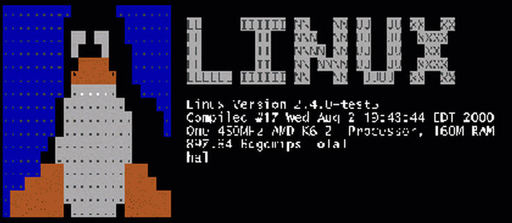 Figura 1.1. Linux Logo. |
|
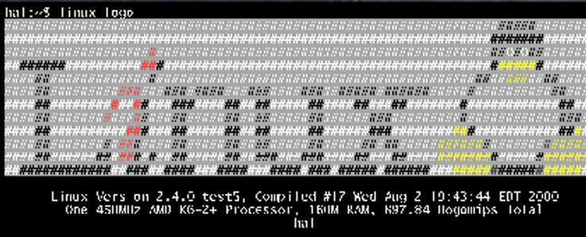 Figura 1.2. Linux Logo in visualizzazione banner. |
|
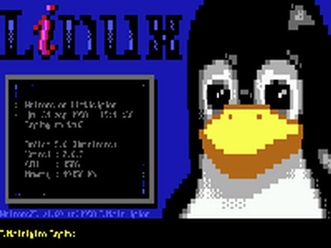 Figura 1.3. Welcome2L. |
Inoltre, se ricompilando il kernel si include il supporto per fbcon, si avrà la possibilità di fare apparire durante l'avvio del sistema un pinguino in modalità grafica.
1.2.17) KERNEL PANIC: VFS: Unable to mount root fs on 03:03
Questo tipo di errore si presenta quando il sistema non riesce a montare la radice del file system. Probabilmente c'è stato un cambiamento di disposizione dei dischi fissi (aggiunta, rimozione o inversione).
Per risolvere il problema, occorre far ripartire il sistema mediante un disco di avvio. Al prompt di LILO si deve indicare quale è la radice del file system:
LILO boot: linux 1 root=/dev/hdx[Invio](11)
Una volta ottenuto l'accesso al sistema occorre modificare il file /etc/fstab indicando il dispositivo corretto della partizione che costituisce la partizione principale. La stessa modifica va effettuata anche nel file /etc/lilo.conf e per rendere effettive le modifiche va rilanciato lilo:
# /sbin/lilo[Invio]
1.2.18) Perché dopo la ricompilazione del kernel viene visualizzato un messaggio di kernel panic?
Quando si ricompila il kernel, è possibile gestirne alcune parti in forma di modulo. Ciò che non deve assolutamente essere caricato sotto forma di modulo è ciò che è necessario in fase di avvio. Infatti, se il modulo per i dischi IDE/EIDE viene caricato sotto forma di modulo, il sistema non sarà in grado di avviarsi e produrrà un messaggio di kernel panic; questo potrebbe spiegare il problema.
1.2.19) swapon: warning: /dev/hda1 has insecure permissions 0660, 0600 suggested
Con questo messaggio il sistema ci avverte di una condizione di scarsa sicurezza relativa ai permessi di una partizione; in questo caso si tratta della prima partizione dell'unità IDE/EIDE master primaria che possiede inutilmente i permessi di lettura e scrittura per il gruppo del proprietario.
Mediante il comando:
# chmod 0600 /dev/hda1[Invio]
si ristabiliscono i permessi corretti.
1.2.20) Parallelizing fsck version x.yy /dev/hdxy :UNEXPECTED INCONSISTENCY; RUN fsck MANUALLY
Questo tipo di messaggio appare prevalentemente quando il sistema non è stato arrestato in maniera corretta. Per risolvere il problema occorre dare il seguente comando:
# e2fsck /dev/hdxy[Invio]
Occorre rispondere affermativamente alle eventuali richieste di clonazione di inode.
1.3.1) Come si fa a indicare che alcune directory del file system sono distribuite su dispositivi differenti?
Per fare questa operazione occorre aggiungere nel file /etc/fstab una riga per ogni dispositivo o file system remoto che si voglia montare.
Ogni riga di /etc/fstab è composta da 6 campi:
ext2;
vfat;
nfs;
swap;
iso9660;
ecc.
campo usato da dump
campo usato da fsck
Se si vuole ad esempio che venga innestata al file system principale la directory /var/ che risiede sulla terza partizione del secondo disco fisso, bisogna aggiungere la seguente riga al file /etc/fstab:
/dev/hdb3 /var ext2 defaults 1 2
1.3.2) Come si visualizza la struttura del file system?
Per vedere quali partizioni sono innestate al file system principale, è sufficiente impartire il comando df:
# df[Invio]
|
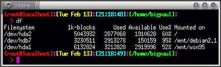 Figura 1.4. La visualizzazione della struttura del file system. |
Per visualizzare invece il partizionamento di un'unità, si darà il comando:
# fdisk -l dispositivo[Invio](12)
1.3.3) Come si crea un file system Ext2 nella terza partizione del secondo disco fisso IDE/EIDE?
Assumendo che il partizionamento sia un'operazione già effettuata, il comando sarà:
# mke2fs /dev/hdb3[Invio]
Per controllare i blocchi difettosi ed eventualmente fissarli, si utilizza l'opzione -c di mke2fs:
# mke2fs -c /dev/hdb3[Invio]
1.3.4) Come si verifica se ci sono settori danneggiati su partizioni con file system Ext2?
Occorre impartire il comando:
# fsck.ext2 -c /dev/partizione[Invio](13)
Oppure:
# e2fsck -c partizione[Invio]
1.3.5) Come si possono ridimensionare le partizioni con file system Ext2?
Per tale scopo esistono due strumenti molto validi:
1.3.6) Come si può creare da GNU/Linux un file system Dos-FAT?
Il comando mkdosfs o il comando mkfs.msdos sono preposti a questo scopo. Ecco un esempio che mostra come creare un file system Dos-FAT nella terza partizione del secondo disco SCSI (/dev/sdb3) dopo avere verificato la presenza di settori difettosi (-n):
# mkdosfs -c /dev/sdb3[Invio]
1.3.7) Come si verifica la presenza di settori danneggiati in una partizione contenente un file system Dos-FAT?
Con il comando fsck.msdos:
# fsck.msdos -r /dev/hda1[Invio]
In questo caso sarà la prima partizione del primo disco fisso IDE/EIDE ad essere controllata e nel caso venisse trovata qualche irregolarità, verrebbe chiesto all'utente come comportarsi.
1.4.1) Se si avesse bisogno di ulteriore spazio swap, come si aggiunge?
Si può creare una partizione Linux-swap oppure un file-swap.
La partizione da rendere partizione Linux-swap si crea come tutte le altre partizioni; il file invece deve essere creato nel seguente modo:
# dd if=/dev/zero of=/file_swap bs=1024 count=1024[Invio](16)
Per rendere swap la partizione /dev/hda2, si darà il comando:
# mkswap -c /dev/hda2[Invio](17)
Per rendere invece swap il file file_swap, si darà il comando:
# mkswap /file_swap 1024[Invio]
Sono stati quindi predisposti due spazi swap che però non sono ancora utilizzati. Per farlo, occorre impartire il comando swapon:
# swapon /dev/hda1[Invio]
Oppure, nel caso del file:
# swapon file_swap[Invio]
Se non si vuole lanciare ogni volta questo comando, basta inserire nel file /etc/fstab le indicazioni del nuovo spazio di swap ed esso verrà attivato ad ogni avvio del sistema. Ecco una porzione d'esempio del file /etc/fstab.
[...] /file_swap none swap sw 0 0 [...]
1.5.1) Operazioni con un dischetto Dos (file system vfat)
Come si crea in Linux un dischetto capace di ospitare file generati con un sistema operativo Dos?
Occorre innanzitutto preparare il dischetto mediante la formattazione:
# fdformat /dev/fd0[Invio]
Il dischetto appena formattato non ha ancora una struttura; bisogna infatti crearci un file system adatto. Nel nostro caso si può utilizzare l'opzione vfat o msdos.
# mkfs -t msdos /dev/fd0[Invio]
Ora che il dischetto possiede un file system, per operarvi, occorre innestarlo al file system principale in uno dei suoi punti di montaggio. Se il punto di montaggio risulta essere /mnt/floppy, il comando per la procedura di innesto sarà:
# mount /dev/fd0 /mnt/floppy[Invio]
Si procede quindi con l'operazione di copia:
# cp file.txt /mnt/floppy[Invio]
Infine si distacca il file system del dischetto da quello principale:
# umount /mnt/floppy[Invio]
1.5.2) Non riesco a montare dischetti con file system Ext2; se uso dischetti con file system Dos invece non ho problemi, perché?
Questo generalmente si verifica quando si cerca di innestare (montare) il file system di un dispositivo mediante il comando mount specificando solamente il nome del dispositivo contenente il file system da innestare o solamente il punto di montaggio. In tale maniera vengono richiamate le impostazioni riposte nel file /etc/fstab.
Nel file suddetto, nella riga riguardante /dev/fd0, in corrispondenza del campo in cui viene indicato il file system del dispositivo, sarà presente la voce msdos o vfat.
Occorre sostituirla con la voce ext2 o qualora si desideri continuare a mantenere tale impostazione in /etc/fstab occorre procedere al montaggio del file system del dischetto manualmente, indicando tutte le opzioni necessarie:
# mount -t ext2 /dev/fd0 /mnt/floppy[Invio](18)
Un'altra soluzione consiste nell'inserire un'altra riga nel file /etc/fstab contenente le indicazioni di montaggio dello stesso dispositivo contenente però un file system diverso (in questo caso ext2) da innestare su un altro punto di montaggio.
1.5.3) Come si può montare una partizione con file system NTFS (MS-Windows NT)?
Occorre ricompilare il kernel includendo l'opzione NTFS filesystem support (read only) per accedere alla partizione di MS-Windows NT.
Il seguente comando permette di montare la partizione:
# mount -t NTFS /dev/hdx /y[Invio](19)
1.5.4) Come si monta una partizione contenente MS-Windows 2000?
Il file system di MS-Windows 2000 può essere di due tipi:
NTFS;
FAT32.
Nel primo caso, l'immagine del kernel che si utilizza deve contenere il supporto per il file system NTFS (questo supporto può essere compilato all'interno dell'immagine oppure può essere caricato mediante il modulo apposito). Una volta abilitato questo supporto, il comando per effettuare il montaggio è:
# mount -t ntfs /dev/x /y[Invio](20)
Nel secondo invece, se la partizione di MS-Windows 2000 presenta un file system FAT32, allora il comando sarà il seguente:
# mount -t ntfs /dev/x /y[Invio](21)
1.5.5) Come si fa a dare agli utenti il permesso di montare il lettore dischetti e il lettore CD-ROM?
Occorre modificare il file /etc/fstab inserendo nel terzultimo campo dei dispositivi /dev/fd0 e /dev/cdrom quanto segue:
users,noauto
Ecco un estratto di un /etc/fstab che contiene tale configurazione:
# cat /etc/fstab [Invio]
# /etc/fstab: static file system information. # # <file system> <mount point> <type> <options> <dump> <pass> /dev/hda2 / ext2 defaults,errors=remount-ro 0 1 /dev/hda3 none swap sw 0 0 proc /proc proc defaults 0 0 /dev/fd0 /floppy auto users,noauto 0 0 /dev/cdrom /cdrom iso9660 users,noauto 0 0 /dev/hdb7 /mnt/debian2.1 ext2 defaults,user,auto 0 0 /dev/hda1 /mnt/win95 vfat defaults,user,auto 0 0
1.5.6)
Ma cosa cambia se si mette user o users nei campi di /etc/fstab?
La risposta la troviamo nelle pagine di manuale di mount (mount(8)):
[...] For more details, see fstab(5). Only the user that mounted a filesystem can unmount it again. If any user should be able to unmount, then use users instead of user in the fstab line. [...] [...] Per ulteriori dettagli, controllate fstab(5). Solamente l'utente che ha montato un file·system può smontarlo. Se tutti gli utenti dovessero avere la possibilità di smontarlo, allora utilizzate users al posto di user nella riga del file fstab. [...]
1.5.7) Come si concedono tutti i permessi di una partizione ad ogni utente del sistema?
Occorre indicare nel file /etc/fstab le opzioni user, quiet ed umask:
/dev/hda1 /mnt/msdos vfat quiet,umask=000 0 0
da mount(8):
user Permette ad un utente normale di montare il
file system. Questa opzione implica anche le
opzioni noexec, nosuid, e nodev (finché ciò
non sia cambiato dal superuser usando, ad
esempio, la seguente riga di opzioni:
user,exec,dev,suid).
quiet Abilita il flag quiet. Tentativi di chown o chmod
su file non restituiscono errori, sebbene fallis-
cano. Usare con cautela!
umask=valore
Imposta l'umask (la bitmask dei permessi che non
sono presenti). Il default è l'umask del processo
corrente. Il valore va dato in ottale.
1.5.8) No final new line in /etc/fstab
Questo messaggio viene visualizzato quando manca un <CR> alla fine dell'ultima riga del file /etc/fstab. Occorre aprire il file per la modifica, posizionarsi alla fine dell'ultima riga, premere [Invio] e salvare.
1.5.9) Come si fa a montare automaticamente i dischi all'avvio?
Il file /etc/fstab è un file di configurazione composto da righe. Ogni riga, oltre ad indicare quale dispositivo deve essere montato, dove deve essere agganciato al file system principale, di che tipo è (vfat, ext2, iso9660, ntfs, ecc.), presenta altre opzioni. Tra queste abbiamo l'opzione auto. Le righe che presentano tale opzione consentono al dispositivo in questione di venire montato automaticamente all'avvio del sistema, senza bisogno di alcun tipo di comando. Le partizioni che non devono essere montate automaticamente, presentano invece l'opzione noauto (il CD-ROM ad esempio) che è una delle opzioni comprese in default.
Inoltre, se un dispositivo è elencato in /etc/fstab ma non presenta l'opzione auto, sarà sufficiente impartire il comando:
# mount dispositivo[Invio]
oppure:
# mount /punto_di_montaggio[Invio]
per montare il dispositivo in questione, e sarà l'eseguibile mount a rilevare le opzioni necessarie dal file /etc/fstab.
1.5.10) Come è possibile montare le partizioni Dos/MS-Windows 9x (file system vfat)?
Per montare le partizioni Dos/MS-Windows 9x occorre disporre di un'immagine del kernel che contenga il supporto per file system vfat.
Una volta ricompilato il kernel, o se si disponesse già di un'immagine con tale supporto, per montare le partizioni Dos/MS-Windows occorrerà indicare vfat come tipo di file system:
# mount -t vfat /dispositivo / punto_di_montaggio[Invio]
1.5.11) Effettuando il login da un'altra console, si ottengono a volte numerosi messaggi relativi a dispositivi già montati. Come si possono eliminare?
Si può evitare questo fenomeno indirizzando lo standard error su /dev/null. Il comando per montare i dispositivi in questione, risulterà così:
# mount /dispositivo /punto_di_montaggio 2>/dev/null[Invio]
2> è appunto il comando di reindirizzamento dello standard error.
Generalmente questo accade solo se il dispositivo o i dispositivi in questione, vengono montati a mano. Montare i dischi di frequente utilizzo mediante il file /etc/fstab risulta essere la modalità più corretta.
1.5.12) Come è possibile accedere a partizioni GNU/Linux (file system Ext2) da MS-Windows?
Si possono usare ext2 tools (22) FSDEXT2 (23) Explore2fs (24) .
I pacchetti possono essere prelevati rispettivamente presso <ftp://ftp.pg.gda.pl/pub/linux/util/fsdext2.zip> e <http://uranus.it.swin.edu.au/~jn/linux/explore2fs.htm>.
Il primo è molto sicuro e si utilizza da riga di comando, il secondo permette di montare partizioni Ext2 come se fossero dischi Dos, solo che è molto pericoloso perché molte volte blocca i canali dell'interfaccia IDE/EIDE.
1.6.1) Installazione e configurazione di LILO
Il file di configurazione di LILO (25) è /etc/lilo.conf. Segue un esempio di /etc/lilo.conf di un sistema che presenta due dischi fissi, il primo contenente MS-Windows ed il secondo contenente GNU/Linux. LILO verrà installato sul primo disco e farà partire in maniera predefinita MS-Windows dal momento che è il primo dei due sistemi operativi indicati.
boot=/dev/hda
map=/boot/map
install=/boot/boot.b
prompt
timeout=50
other=/dev/hda1
label=dos
table=/dev/hda
image=/boot/vmlinuz-2.2.5-15
label=linux
root=/dev/hdb1
read-only
Al prompt di LILO si avranno a disposizione 5 secondi (timeout = 50) per scegliere il sistema da avviare. Per avviare GNU/Linux occorrerà inserire linux come dichiarato nella variabile label del secondo sistema operativo.
Si deve ricordare che non basta modificare il file /etc/lilo.conf per rendere effettive le modifiche. Occorrerà invece lanciare l'eseguibile lilo:
# lilo -v[Invio](26)
1.6.2) Come posso avviare Linux con un dischetto di avvio, in maniera veloce?
I dischetti di avvio generalmente contengono, oltre al gestore degli avvii (boot loader), anche l'immagine del kernel per cui l'operazione di caricamento del sistema risulta molto lenta. Si può in ogni caso accelerare tale procedura mantenendo solo il gestore degli avvii (boot loader) su dischetto, ad esempio LILO, e utilizzando un'immagine del kernel presente sul file system principale.
Per fare questo occorre modificare il file /etc/lilo.conf che dovrà risultare simile a questo:
boot=/dev/fd0 (l'avvio avverrà da dischetto)
vga=3
compact
read-only
prompt
timeout=0 (l'avvio avverrà immediatamente
dopo l'accesso al dischetto)
image = /vmlinuz (indica il percorso dell' immagine del kernel)
root = /dev/hdb2 (indica la partizione che sarà il file
system principale in questo caso è la
seconda partizione del secondo disco della
prima catena IDE/EIDE)
label = linux
Occorre a questo punto inserire un dischetto formattato nel lettore dei dischetti, e lanciare:
# lilo -v[Invio]
Al termine si riavvia il sistema assicurandosi di avere riabilitato nel BIOS l'avvio da dischetto. Può capitare, anche se è molto raro, che il kernel non si avvii. In tal caso, dopo avere verificato l'esattezza dei dati inseriti in /etc/lilo.conf, si può provare a eliminare la riga compact perché su alcuni sistemi può non funzionare. Questo comporta solamente un leggerissimo rallentamento della fase di avvio.
Il fatto di potere provare l'avvio del sistema da dischetto permette di provare in tutta sicurezza i procedimenti di avvii multipli dei sistemi operativi. Capita spesso di avere delle difficoltà nel configurare un sistema che debba poter avviare alternativamente Linux, MS-Windows 9x e MS-Windows NT. Una volta soddisfatti delle configurazioni provate su dischetto, basterà sostituire /dev/fd0 con /dev/hda e rilanciare:
# lilo -v[Invio]
1.6.3) Come si installa LILO in una posizione diversa da quella attuale?
Il file /etc/lilo.conf contiene la riga:
boot=
Questa indica su quale dispositivo o su quale partizione dovrà essere installato LILO. Indicando /dev/hda LILO verrà installato nel settore di avvio (boot) del primo disco fisso IDE/EIDE; indicando invece /dev/hdb2, verrà installato nella seconda partizione del secondo disco fisso della prima catena IDE/EIDE. In questo ultimo caso, la partizione deve essere resa avviabile (mediante il comando a di fdisk o l'apposita casella di cfdisk).
Dopo aver fatto le modifiche, LILO deve essere rilanciato mediante il comando:
# lilo -v[Invio]
Da un sistema con sistema operativo Dos o MS-Windows:
C:\> fdisk /mbr[Invio]
oppure, dopo avere avviato da un disco di ripristino di MS-Windows:
C:\> sys c:[Invio]
Da Linux invece:
# lilo -U[Invio]
oppure si può utilizzare dd per riscrivere il MBR originario grazie al file di backup che LILO crea al momento della sua installazione. Questo file generalmente risiede in /boot e ha di solito un nome tipo boot.xxxx (xxxx può assumere diversi valori). Il comando per riscrivere il MBR è:
# dd if=boot.xxxxx of =/dev/hda bs=446 count=1[Invio]
1.6.5) Come si fa a scegliere quale sistema operativo avviare in maniera predefinita con LILO?
Il sistema operativo che si avvia in maniera predefinita è il primo di quelli indicati nel file /etc/lilo.conf. Se ad esempio si dispone di un /etc/lilo.conf come il seguente, il sistema operativo predefinito sarà GNU/Linux
boot=/dev/sdb1
map=/boot/map
install=/boot/boot.b
prompt
timeout=50
image=/boot/vmlinuz
label=linux
root=/dev/sdb1
initrd=/boot/initrd
read-only
other=/dev/sda1
label=dos
table=/dev/sda
Se invece si ha l'intenzione di rendere MS-Windows il sistema predefinito, occorrerà semplicemente invertire le sezioni image e other:
boot=/dev/sdb1
map=/boot/map
install=/boot/boot.b
prompt
timeout=50
other=/dev/sda1
label=dos
table=/dev/sda
image=/boot/vmlinuz
label=linux
root=/dev/sdb1
initrd=/boot/initrd
read-only
Ogni cambiamento effettuato dovrà comunque essere sempre seguito dal comando lilo:
# lilo -v[Invio]
1.6.6) Come è possibile con LILO gestire più distribuzioni GNU/Linux sullo stesso sistema?
Assumendo che il /etc/lilo.conf sia originariamente simile a questo:
boot=/dev/hda
map=/boot/map
install=/boot/boot.b
prompt
timeout=50
image=/boot/bzImage
label=linux.debian
root=/dev/hda1
read-only
si deduce che LILO è per ora in grado di avviare una sola distribuzione. Per permettere a LILO di avviare altre distribuzioni, sarà necessario aggiungere tante sezioni image quante saranno le ulteriori distribuzioni da avviare.
Ogni sezione image indicherà il nome dell'immagine del kernel da avviare, il suo percorso, la partizione su cui montare il file system principale (root).
Se si volesse quindi aggiungere una sezione che possa invocare una seconda distribuzione, presente su /dev/hda4, si dovrà aggiungere il seguente codice:
image=/boot/vmlinuz-2.2.5-15
label=linux.redhat
root=/dev/hda4
read-only
Questo presume che occorre copiare nella directory /boot della prima distribuzione, l'immagine del kernel della seconda; la directory /lib/modules/x (27) deve essere copiata nella directory /lib/modules/ della prima distribuzione. linux.redhat sarà l'etichetta che servirà ad invocare la seconda distribuzione.
Ecco quindi il /etc/lilo.conf completo:
boot=/dev/hda
map=/boot/map
install=/boot/boot.b
prompt
timeout=50
image=/boot/bzImage
label=linux.debian
root=/dev/hda1
read-only
image=/boot/vmlinuz-2.2.5-15
label=linux.redhat
root=/dev/hda4
read-only
1.6.7) Come si deve configurare LILO se sulla macchina è installato anche MS-Windows NT?
Assumendo che sul primo disco sia installato GNU/Linux e MS-Windows ad esempio sulle partizioni /dev/hda1 e /dev/hda2 e che MS-Windows NT sia installato sul disco fisso slave, il file /etc/lilo.conf dovrà essere configurato come nell'esempio seguente:
boot=/dev/hda
map=/boot/map
install=/boot/boot.b
prompt
timeout=30
other=/dev/hda1
label=dos
table=/dev/hda
image=/boot/vmlinuz-2.2.5-15
label=linux
root=/dev/hda2
read-only
other=/dev/hdb
label=nt
map-drive=0x80
to = 0x81
map-drive=0x81
to = 0x80
LILO verrà quindi installato sul MBR del primo disco fisso. La configurazione ora descritta, permetterà di scegliere al prompt di LILO uno dei tre sistemi operativi mediante le tre etichette:
dos
linux
nt
La scelta di uno dei primi due sistemi operativi comporterà il loro avvio in maniera convenzionale. La scelta invece di MS-Windows NT comporterà lo scambio logico dei codici dell'identificazione dei dischi. Essi sono tipicamente 8016 per il primo disco IDE master) e 8116 per il secondo (slave). La porzione:
map-drive=0x80 to = 0x81 map-drive=0x81 to = 0x80
effettuerà questo scambio permettendo a MS-Windows NT di trovarsi su un disco master.
Considerando questa possibilità è bene provvedere, ad installare MS-Windows NT o su un disco montato come master o su un disco slave dopo aver provveduto a disabilitare dal BIOS il disco fisso master contenente gli altri sistemi operativi. Dopo l'installazione, si dovrà reimpostare come slave il disco in oggetto.
1.6.8) Come si configura LILO se si vuole installare una distribuzione GNU/Linux sul primo disco fisso e MS-Windows su un altro?
MS-Windows per avviarsi deve risiedere nel primo disco fisso della prima catena IDE/EIDE; se questo non è possibile si deve ricorrere alle opzioni map-drive di LILO. Mediante queste opzioni, si effettuerà lo scambio logico dei codici dell'identificazione dei dischi. Essi sono 8016 per il disco master della prima catena IDE/EIDE e 8116 per il disco slave della stessa catena e così via. Lo scambio permette di rendere master dischi slave e viceversa.
Con il /etc/lilo.conf configurato in questo modo:
boot=/dev/hda
map=/boot/map
install=/boot/boot.b
default=linux
prompt
timeout=20
read-only
root=/dev/hda1
image=/vmlinuz
label=linux
other=/dev/hdb1
label=win
map-drive=0x80
to=0x81
map-drive=0x81
to=0x80
MS-Windows potrà essere avviato normalmente seppure esso non risieda nel primo disco fisso della prima catena IDE/EIDE.
1.6.9) Se si reinstalla MS-Windows, il MBR contenente LILO verrà sovrascritto; come posso prevenire questo problema?
Si consiglia in genere, prima di trovarsi in situazioni spiacevoli di replicare su dischetto il proprio LILO una volta soddisfatti del suo funzionamento. Per fare questo, basta sostituire, all'interno del file /etc/lilo.conf queste righe:
boot=/dev/hda map=/boot/map install=/boot/boot.b
con queste altre:
boot=/dev/fd0 compact read-only
e rilanciare lilo con un dischetto inserito nel lettore:
# lilo -v[Invio]
In tal modo, qualora il MBR (Master Boot Record) venisse sovrascritto, si sarà in grado di avviare il sistema esattamente come prima ma da dischetto. A quel punto non resterà altro che rilanciare lilo assicurandosi che le impostazioni di boot, map e install siano corrette.
1.6.10) Come si può impostare una password per LILO?
L'indicazione della password per LILO deve essere posta nel file /etc/lilo.con. La sintassi è semplice ed è indicata dalla pagina di manuale di lilo.conf (1):
password=password
La password può essere inserita sia nella sezione con le impostazioni generali che nelle singole sezioni specifiche di ogni sistema operativo.
1.6.11) Perché digitare «linux 1» al prompt di LILO consente l'accesso al sistema senza richiesta di password?
Tutto dipende dal fatto che per poter dare questo comando bisogna avere l'accesso fisico al sistema. Un server di solito, al contrario di macchine casalinghe, si trova in luoghi protetti il cui accesso è riservato a poche persone. Riavviare un server è un operazione a volte possibile esclusivamente via hardware. Ecco quindi che la possibilità di dare un comando a LILO è una facoltà riservata spesso solo a coloro che possono accedere fisicamente alla macchina. E' possibile in ogni caso impostare una password aggiungendo la riga:
password=password
al file /etc/lilo.conf; in questo modo anche se il sistema verrà riavviato, ci sarà un controllo al prompt di LILO. Inoltre, se viene aggiunta anche la riga:
restricted
LILO chiederà la password ogni volta che si cercherà di fornirgli degli argomenti. Dal momento che la password viene scritta in chiaro, il file dovrà essere accessibile solo da root.
1.6.12) Error 0x10 - visualizzazione di ripetuti 01 con LILO
In questi casi si deve controllare che:
il disco fisso contenente GNU/Linux sia impostato nel BIOS con la modalità LBA attivata;
la partizione radice (root) risieda entro il cilindro 1024. Se così non è, LILO non funziona. (28)
1.6.13) Da cosa può dipendere se si riceve la segnalazione della presenza di un virus nel settore di avvio (boot)?
Qualora all'avvio del sistema, dopo che sia stato scelto il sistema operativo desiderato mediante LILO, si presenti un messaggio che indichi che è stato rilevato un virus nel settore di avvio (boot), occorre disattivare dal BIOS, il controllo dei virus. Il BIOS confonde LILO con un virus. Se dopo tale operazione, il problema persistesse è probabile allora che ci sia un virus.
1.6.14) Ci sono delle valide alternative a LILO?
LILO è solo uno dei tanti gestori degli avvii (boot loader). Tra gli altri gestori liberi ricordiamo:
|
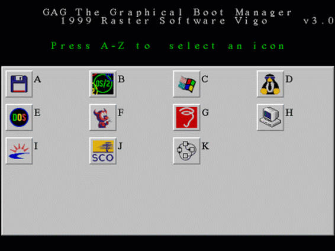 Figura 1.5. Una schermata di GAG. |
|
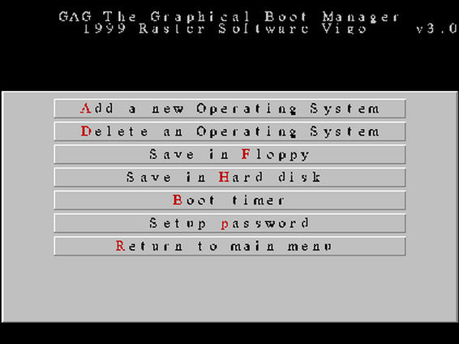 Figura 1.6. Una schermata di GAG. |
|
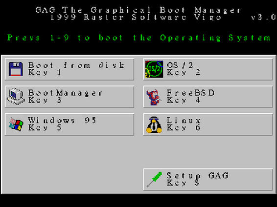 Figura 1.7. Una schermata di GAG. |
Alternativamente, si deve sempre ricordare che è possibile avviare GNU/Linux tramite un dischetto di avvio (boot) o tramite Loadlin.
1.7.1) Come si può sapere quale è l'ultima versione del kernel?
Si può fare mediante finger:
[bigpaul@localhost /~]$ finger @linux.kernel.org[Invio]
o:
[bigpaul@localhost /~]$ finger @finger.kernel.org[Invio]
e verrà restituito qualcosa simile a questo:
[linux.kernel.org]
The latest stable version of the Linux kernel is: 2.2.12
The latest beta version of the Linux kernel is: 2.3.18
The latest prepatch (alpha) version *appears* to be: none
|
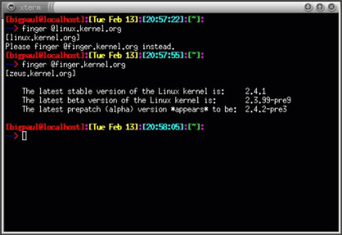 Figura 1.8. Il comando finger. |
1.7.2) Come si visualizza la versione del kernel in uso?
Si visualizza con uname seguito dall'opzione -n:
[bigpaul@localhost /~]$ uname -r[Invio]
1.7.3) Come è possibile conoscere il nome del file dell'immagine del kernel che è stata caricata?
Esiste la variabile BOOT_IMAGE di LILO che contiene il file dell'immagine del kernel che è stata caricata. Purtroppo essa viene azzerata da qualche processo, per cui dopo il login risulta vuota. Bisogna usarla prima di depmod in rc.sysinit per visualizzarne il valore.
Si deve ricordare comunque che con:
# uname -a[Invio]
viene restituita una riga di questo tipo:
Linux server 2.2.13 #4 Sun Nov 21 14:13:37 CET 1999 i586 unknown
da cui è possibile capire almeno la versione del kernel utilizzato.
1.7.4) Come si ricompila il kernel?
La metodica qui di seguito spiegata si riferisce sia alla ricompilazione di un kernel già in utilizzo, sia alla ricompilazione di una nuova versione.
Qualora si intenda ricompilare il kernel gi presente nel sistema, occorre assicurarsi che nella directory /usr/src sia generalmente presente un collegamento simbolico chiamato linux che punti alla directory che contiene tutti i sorgenti del kernel installato. A volte non è presente tale collegamento simbolico ma c'è direttamente la directory linux. Qualora non sia presente nessuno dei due, occorre individuare la directory contenente i sorgenti e creare in /usr/src un collegamento simbolico chiamato linux che vi punti.
Se si deve invece ricompilare una nuova versione del kernel, si deve copiare il pacchetto in /usr/src e successivamente si deve decomprimerlo mediante:
# cd /usr/src/[Invio]
# tar -zxvf pacchetto.tar.gz[Invio]
In questo modo verrà creata una nuova directory chiamata linux dove sono presenti i sorgenti del nuovo kernel. Se la directory creata dal processo di decompressione non si chiama linux, si dovrà rinominarla:
# mv directory_creata linux[Invio]
o creare un collegamento simbolico simbolico ad essa:
# ln -s directory_creata linux[Invio]
Ora occorre entrare nella directory /usr/src/linux (collegamento simbolico o directory che sia) e si devono eseguire questi comandi:
# make mrproper[Invio]
(Questo comando cancella il file .config riazzerando tutte le opzioni selezionate nell'ultimo tentativo di ricompilazione.) (33)
# make menuconfig[Invio]
se si vuole una schermata interattiva testuale, oppure, per una schermata grafica:
# make xconfig[Invio]
|
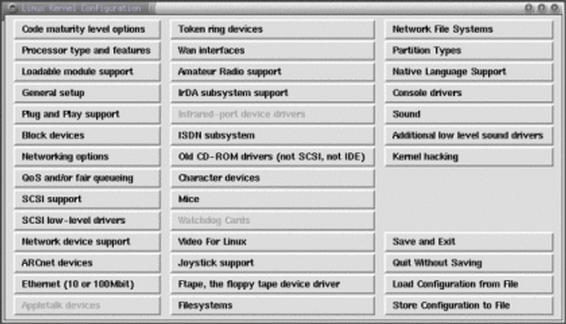 Figura 1.9. make xconfig. |
A questo punto si devono scegliere tutte le componenti che si desiserano utilizzare e il supporto per le periferiche di cui si dispone. A scelta ultimata, si salva la configurazione (che verrà salvata nel file .config) e si impartiscono i seguenti comandi:
# make dep[Invio]
# make clean[Invio]
# make bzImage[Invio]
che possono essere anche inclusi tutti insieme in un unico comando:
# make dep clean bzImage[Invio]
Conviene fare:
# make bzImage[Invio]
e non:
# make zImage[Invio]
perché il secondo comando crea un'immagine del kernel più grande che il LILO può non accettare; per cui conviene subito compilare con l'opzione bzImage.
Se alcune componenti sono state dichiarate come modulo, va dato il comando:
# make modules[Invio]
e subito dopo:
# make modules_install[Invio]
A questo punto l'immagine del kernel sarà stata creata nella directory /usr/src/linux/arch/i386/boot con il nome bzImage.
L'immagine va copiata nella directory /boot/:
# cp bzImage /boot[Invio]
Si deve in seguito modificare opportunamente il file /etc/lilo.conf indicando il nuovo nome dell'immagine. Nella sezione corrispondente al sistema GNU/Linux si deve inserire il nome del file dell'immagine dopo:
image=
Se ad esempio non si è rinominato il file dell'immagine, si dovrà inserire la riga seguente:
image=bzImage
Le modifiche effettuate al file /etc/lilo.conf non saranno effettive fino a che non si lancia lilo:
# /sbin/lilo[Invio]
A questo punto al riavvio, partirà la nuova versione del kernel.
1.7.5) Come funziona la ricompilazione del kernel in una distribuzione GNU/Linux Debian?
In una distribuzione GNU/Linux Debian, la gestione del kernel presenta una particolarità sebbene sia sempre possibile operare in maniera convenzionale come indicato nella LDR 1.7.4. La particolarità consiste nella possibilità di creare pacchetti Debian del proprio kernel con il vantaggio quindi di potere installare e disinstallare rapidamente diversi pacchetti del kernel e specialmente di potere facilmente utilizzare la stessa immagine su più macchine.
Per fare ciò, è necessario installare i pacchetti kernel-package e bin86. La descrizione del pacchetto kernel-package è la seguente:
This package provides the capability to create a debian kernel-image package by just running make-kpkg kernel_image in a kernel source directory tree. It can also build the kernel source package as a debian file, the kernel headers package. In general, this package is very useful if you need to create a custom kernel, if, for example, the default kernel does not support some of your hardware, or you wish a leaner, meaner kernel. If you are running on an intel x86 platform, and you wish to compile a custom kernel (why else are you considering this package?), then you may need the package bin86 as well. (This is not required on other platforms). Questo pacchetto consente di poter creare un pacchetto debian contenente l'immagine del kernel. Esso può inoltre creare un file debian, il pacchetto delle intestazioni del kernel, da un pacchetto del sorgente del kernel. In generale, questo pacchetto è molto utile se avete bisogno di creare kernel personalizzati, se ad esempio, il kernel predefinito non gestisce una parte del vostro hardware, o se aveste bisogno di un kernel più piccolo. Se state utilizzando una piattaforma intel x86, e vorreste compilare un kernel personalizzato (altrimenti perché dovreste considerare questo pacchetto?), allora avrete bisogno anche del pacchetto bin86. (Non richiesto per altre piattaforme).
Una volta installati i suddetti pacchetti, si seguono tutti i passaggi indicati nella LDR 1.7.4 fino a make menuconfig (o make xconfig). Non serviranno quindi i seguenti comandi: make dep, make clean, make zlilo, make modules, make modules install.
A questo punto, per creare il pacchetto personalizzato, si deve impartire il seguente comando:
# make-kpkg nome[Invio](34)
Nella directory esterna ai sorgenti del kernel sarà ora presente un pacchetto deb contenente il kernel compilato e tutti i moduli necessari.
Disponendo ora di un pacchetto deb, lo si può installare:
# dpkg -i /usr/src/nome[Invio]
Per verificarne il funzionamento, si dovrà riavviare il sistema:
# shutdown -r now[Invio]
Oltre al pacchetto del kernel, make-kpkg è in grado di generare pacchetti Debian particolari:
1.7.6)
Cosa succede se copio la nuova immagine del kernel in /boot ma lì c'è la vecchia immagine?
Non è importante che l'immagine del kernel abbia sempre lo stesso nome. Si possono infatti copiare nella directory /boot/ diversi file immagine. Sarà allora compito del gestore degli avvii (boot manager) richiamare le immagini desiderate all'avvio del sistema.
Se ad esempio disponiamo di un file /etc/lilo.conf configurato nel seguente modo:
boot=/dev/hda
map=/boot/map
install=/boot/boot.b
prompt
timeout=50
image=/boot/bzImage-2.2.0
label=predefinto
root=/dev/hda1
read-only
image=/boot/bzImage-2.2.5-15
label=prova
root=/dev/hda1
read-only
nella directory /boot/ saranno presenti i due file immagine bzImage-2.2.0 e bzImage-2.2.5-15 che saranno invocati dal prompt di LILO mediante le etichette predefinito e prova. Si può notare che le due voci puntano alla stessa directory radice per cui si fornisce la scelta di due immagini del kernel diverse per lo stesso sistema GNU/Linux.
1.7.7) Quanto spazio occupa il sorgente del kernel? Si può cancellare dopo la ricompilazione?
I sorgenti decompressi occupano circa 60-70 Mibyte.
1.7.8) Come si applica una patch al kernel?
L'applicazione di una patch al kernel risulta una operazione molto comoda in quanto consente di evitare lo scaricamento dell'intero sorgente che è generalmente di grosse dimensioni.
Per applicare una patch al kernel, si deve innanzitutto copiare il file di modifiche (patch) all'interno della directory /usr/src/. Entrati quindi nella stessa directory mediante il comando:
# cd /usr/src[Invio]
applichiamo il file di modifiche (patch):
# bzip2 -dc nomefile.bz2 |patch -p1[Invio]
o:
# gzip -dc nomefile.gz |patch -p0[Invio]
se è in formato .gz.
Oltre a questa metodica, si può ricorrere all'eseguibile patch-kernel presente nella directory /usr/src/linux/scripts/. Con questa metodica, come nella precedente, si copiano i file di modifiche (patch) nella directory /usr/src/ e si lancia l'eseguibile patch-kernel:
# cd /usr/src/linux/scripts/patch-kernel[Invio]
patch-kernel è in pratica uno script che provvede a cercare i file di modifiche (patch) nella directory /usr/src/ e ad applicarli.
1.7.9) Dopo avere applicato una patch al kernel, la procedura di ricompilazione subisce dei cambiamenti?
No, dopo l'applicazione del file di modifiche (patch) tutti i file sono stati aggiornati e il sorgente del kernel che ne risulta è identico a quello della versione alla quale si è effettuato l'aggiornamento.
In ogni caso è bene aggiornare la configurazione con il comando:
# make oldconfig[Invio]
1.7.10) Durante la ricompilazione del kernel, viene segnalata la mancanza di wish, perché?
Wish non è altro che l'interprete Tcl. Occorre quindi installare il pacchetto tk (toolkit Tk) che in ogni caso necessita del pacchetto tcl (Tool Command Language - TCL).
I pacchetti ora descritti vengono di solito forniti con qualsiasi distribuzione.
1.7.11) Dopo avere ricompilato il kernel, come è possibile provare senza rischio l'immagine appena creata?
|
La seguente procedura presume che la ricompilazione sia già stata effettuata (1.7.4) e che l'immagine del kernel rinominata in |
Il file /etc/lilo.conf attuale dovrebbe somigliare a questo:
boot=/dev/hda
map=/boot/map
install=/boot/boot.b
prompt
timeout=50
image=/boot/bzImage
label=linux
root=/dev/hda3
read-only
(eventuale altro sistema operativo)
bzImage (o qualsiasi altro nome) è il nome dell'immagine del kernel attuale e /dev/hda3 è la partizione radice.
Se come si è detto la nuova immagine del kernel è stata copiata in /boot/, dovremo aggiungere al file lilo.conf, un'altra sezione:
image=/boot/bzImage-prova
label=prova
root=/dev/hda3
read-only
Il file lilo.conf risulterà quindi:
boot=/dev/hda
map=/boot/map
install=/boot/boot.b
prompt
timeout=50
image=/boot/bzImage
label=linux
root=/dev/hda3
read-only
image=/boot/bzImage-prova
label=prova
root=/dev/hda3
read-only
(eventuale altro sistema operativo)
Per rendere operative le modifiche apportate a lilo.conf, si dovrà rilanciare LILO:
# lilo -v[Invio](35)
Al riavvio del sistema, al prompt di LILO digitando prova verrà avviata la nuova immagine del kernel. Qualora la nuova immagine non funzionasse a dovere, sarà sempre possibile utilizzare l'etichetta linux (in ogni caso la predefinita) per caricare la vecchia immagine del kernel.
Prima di eliminare la vecchia immagine del kernel, è consigliato un certo periodo di prova. Una volta sicuri del funzionamento della nuova configurazione sarà possibile rimuovere la sezione:
image=/boot/bzImage
label=linux
root=/dev/hda3
read-only
dal file /etc/lilo.conf e sostituire prova con linux. Ricordarsi sempre, dopo qualsiasi modifica al file di configurazione di LILO, di impartire:
# lilo -v[Invio]
per rendere effettive le modifiche.
1.7.12) Si può trasportare l'immagine del kernel da una distribuzione ad un'altra?
Se l'immagine del kernel da spostare include il supporto per caratteristiche del sistema ricevente, sarà un'operazione possibile. Per poter spostare il kernel sono necessari:
il file bzImage (l'immagine del kernel, presente generalmente in /boot/, può assumere qualsiasi nome);
la directory /usr/src/linux/include/;
la directory /lib/modules/x.x.xx relativa alla versione del kernel che si sta spostando.
kernel-package (1.7.5) di una distribuzione Debian GNU/Linux consente di creare un pacchetto deb di tutte le componenti di un kernel. L'utilizzo quindi dello stesso kernel, su più sistemi, risulterà quindi più semplice e versatile.
1.7.13)
A cosa serve il file initrd-x.x.xx.img nella directory /boot?
La guida The Official Red Hat Linux Reference Guide riporta quanto segue:
An initrd image is needed for loading your SCSI module at boot time. The shell script /sbin/mkinitrd can build a proper initrd image for your machine if the following conditions are met:
The loopback block device is available.
The /etc/conf.modules file has a line for your SCSI adapter; for example: alias scsi_hostadapter BusLogic
Viene richiesta un'immagine initrd per caricare il vostro modulo SCSI all'avvio. Lo script /sbin/mkinitrd può costruire un'immagine initrd corretta per la vostra macchina se si presentano le seguenti condizioni:
È disponibile il dispositivo di blocco del loopback
Il file /etc/conf.modules presenta una riga per l'adattatore SCSI; ad esempio: alias scsi_hostadapter BusLogic
initrd-x.x.xx.img è quindi un'immagine utilizzata per caricare il modulo SCSI all'avvio. La si può creare con il comando /sbin/mkinitrd.
1.7.14) Il kernel di Linux è in grado di gestire periferiche USB?
Occorre avere come minimo un kernel 2.2.14 con il backport oppure un 2.3.xx.
1.7.15) Come è possibile ottimizzare il kernel per macchine con processore Pentium?
Lo si può fare modificando il makefile che si trova in /usr/src/linux. In pratica bisogna cercare le voci:
HOSTCFLAGS
MAKE
CFLAGS
e modificare il loro contenuto nel seguente modo:
HOSTCFLAGS =-Wall -Wstrict-prototypes -O3 -march=pentium -mcpu=pentium -ffa st-math -funroll-loops -fomit-frame-pointer -fforce-mem -fforce-addr -malign-dou ble -fno-exceptions MAKE =make -j 4 CFLAGS := $(CPPFLAGS) -Wall -Wstrict-prototypes -O3 -march=pentium -mcpu=pentium -ffast-math -funroll-loops -fomit-frame-pointer -fforce-mem -fforce-addr -malig n-double -fno-exceptions
(nella versione 2.3.47 si trova CFLAGS := $(CPPFLAGS) mentre fino alla 2.2.14 c'è solo CFLAGS =).
È da notare che si deve utilizzare come compilatore pgcc (un compilatore gcc ottimizzato per processori pentium).
1.7.16) Dove si trovano i sorgenti del kernel?
I sorgenti del kernel si trovano generalmente nella directory /usr/src/linux.
1.7.17) Perché sopraggiungono dei problemi relativi a ipfwadm con i kernel della serie 2.2.x?
Perché dai kernel della serie 2.2.x, non si usa più ipfwadm ma ipchains.
1.7.18) Perché nei kernel della serie 2.2.x non è presente l'opzione drop source-routed frames?
La risposta è tratta dal file /usr/src/linux/Documentation/Changes:
In 2.0.x the kernel could be configured to drop source routed IP packets via a compile time configuration option. In 2.2.x, this has been replaced by a sysctl.
Nei kernel della serie 2.0.x ci potrebbe essere la configurazione che (ri)lasci i pacchetti IP sorgenti (originali) instradati mediante un'opzione di configurazione del tempo di compilazione. Nella serie 2.2.x, questa caratteristica è stata sostituita da una sysctl.
1.7.19) Come si verifica quali sono i pacchetti RPM del kernel installati?
Con il comando:
# rpm -qa | grep kernel | sort[Invio]
1.7.20) Come si possono memorizzare gli eventuali messaggi (di errore e non) che possono risultare dalla procedura di ricompilazione del kernel?
Durante la ricompilazione del kernel, possono verificarsi numerose problematiche che vengono di solito visualizzate mediante messaggi. Con il comando:
# make dep;make clean;make bzImage > LOG-k 2> ERR-k;make modules > LOG-m 2> ERR-m[Invio]
sarà possibile registrare nei file LOG-k e LOG-m gli avvertimenti e gli errori verificatesi durante la ricompilazione del kernel e l'installazione dei moduli.
Risulterà quindi più facile individuare i problemi e le cause degli errori.
1.7.21) Perché dopo la ricompilazione del kernel c'è una diminuzione dello spazio nel disco?
La ricompilazione del kernel comporta una diminuzione dello spazio su disco di circa 20 - 30 Mibyte.
Per recuperare lo spazio, occorre dare:
# make clean[Invio]
dopo essersi posizionati in /usr/src/linux.
1.7.22)
Dove devo copiare il file System.map e che operazioni devo compiere su di esso?
Il file System.map si viene a trovare nella directory /usr/src/linux/ alla fine del processo di ricompilazione del kernel e va copiato nella directory /boot/. Per ogni immagine del kernel, esiste un System.map diverso. Occorre quindi provvedere, nel caso si desideri utilizzare più di un'immagine del kernel nel proprio sistema, a sostituire i vari file System.map a seconda dell'immagine del kernel che si sta utilizzando.
Un modo per fare questo è rinominare i vari System.map in System.map.x.y.z(36), e creare ogni volta un collegamento simbolico che punti al System.map.x.y.z desiderato.
Se ad esempio si è appena ricompilato il kernel 2.2.12 occorrerà copiare in /boot/ l'immagine del kernel e il file System.map rinominando quest'ultimo in System.map.2.2.12:
# cp /usr/src/linux/arch/i386/boot/bzImage /boot/[Invio]
e:
# cp /usr/src/linux/System.map /boot/System.map.2.2.12[Invio]
Occorrerà quindi creare il collegamento simbolico in /boot:
# ln -s /boot/System.map.2.2.12 /boot/System.map[Invio]
lrwxrwxrwx 1 root root 19 Jun 5 14:38 System.map -> System.map.2.2.12 -rw-r--r-- 1 root root 186846 Jun 5 14:30 System.map-2.2.12
1.7.23)
Come si possono gestire più file System.map quando si dispone di più immagini del kernel?
Per far sì che il sistema carichi all'avvio i file /boot/System.map corretti a seconda dell'immagine del kernel che si è scelto di caricare, si dovrà modificare il file /etc/rc.d/init.d/syslog (/etc/init.d/sysklogd in una distribuzione Debian).
La riga:
daemon klogd -k /boot/System.map
dovrà essere sostituita con:
daemon klogd -k /boot/System.map-`uname -r`
Ora si devono copiare in /boot i file System.map dei rispettivi kernel, rinominandoli nel seguente modo:
# mv System.map System.map-x.y.z[Invio](37)
1.7.24)
Perché il sistema mi avverte che la versione del file System.map è sbagliata?
Ogni immagine del kernel, ha un System.map che vi si riferisce. Probabilmente in /boot/ c'è un System.map che non si riferisce all'immagine del kernel caricata. Questo di solito accade se si dimentica di copiare il file System.map presente in /usr/src/linux/ in /boot/ al termine della ricompilazione del kernel.
Qualora si intenda utilizzare sempre e solo l'ultima immagine creata dal kernel, conviene rendere /boot/System.map un collegamento simbolico a /usr/src/linux/System.map; in questo modo ogni volta che il kernel verrà aggiornato, il collegamento farà sempre riferimento all'ultima versione di System.map e non verranno più segnalati problemi di incongruenza.
1.7.25) as86 Command not found
Questo errore si verifica nella fase di creazione dell'immagine del kernel, dopo il comando:
# make bzImage[Invio]
In genere viene visualizzato qualcosa del genere:
make[1]: Entering directory '/linux/arch/i386/boot' as -0 -a -o bootsect.o bootsect.s make[1]: as86: command not found make[1]: *** [bootsect.o] Error 127 make[1]: Leaving directory '/linux/arch/i386/boot' make: *** [zImage] Error 2
Il problema si presenta perché manca il pacchetto bin86 di cui as86 fa parte.
1.7.26) /dev/lp0 :not detected
Spesso dopo l'aggiornamento del kernel da una versione 2.0.x ad una 2.2.x, capita di ricevere segnalazioni analoghe alla seguente:
/dev/lp0 :not detected
Se non viene riconosciuta la porta parallela può dipendere dal fatto che in /etc/conf.modules manca la riga riguardante il modulo parport_pc.o. Occorre quindi aggiungere al file suddetto le seguenti righe:
alias parport_lowlevel parport_pc options parport_pc io=0x378,0x278 irq=7,auto
modificando opportunamente gli indirizzi con quelli del proprio sistema.
Se durante operazioni abbastanza impegnative per il sistema (la ricompilazione del kernel ad esempio), si ricevono messaggi quali:
Internal compiler error: program cc1 got fatal signal 11</em>
È bene prendere in considerazione il fatto che ci possano essere dei problemi di malfunzionamento della RAM. Potrebbe essere difettosa.
1.7.28) No setup Signature found
Questo messaggio generalmente appare non appena l'immagine del kernel comincia ad essere caricata. Esso è la manifestazione del fatto che l'immagine del kernel non è stata predisposta ad utilizzare il file system principale desiderato. A tale scopo si utilizza il programma rdev:
# rdev /boot/bzImage /dev/partizione[Invio]
Occorrerà sostituire /boot/bzImage con la posizione dell'immagine del kernel all'interno del file system (/boot/vmlinuz, /boot/vmlinuz-2.2.9, /boot/zImage, ecc.). partizione dovrà essere sostituita dal nome del dispositivo della partizione radice.
1.8.1) Cosa si deve fare per i moduli dopo la ricompilazione del kernel?
I moduli devono essere installati e lo si fa mediante il comando:
# make modules modules_install[Invio]
dopo avere dato:
# make bzImage[Invio]
Questo comando crea la directory /lib/modules/x.y.z. (38)
1.8.2) Come si possono caricare i moduli del kernel all'avvio?
Se ad esempio si intende caricare il modulo ip_masq_ftp.o ad ogni avvio del sistema invece di impartire ogni volta:
# modprobe ip_masq_ftp[Invio]
è necessario inserire la riga:
/sbin/modprobe ip_masq_ftp.o
all'interno del file /etc/rc.d/rc.local o nei file corrispondenti delle diverse distribuzioni.
1.8.3) modprobe: can't locate module...
Se nel file /var/log/messages sono presenti messaggi simili a questi:
May 7 20:59 linuxfaq.it modprobe: can't locate module ppp-compress-21
May 7 20:59 linuxfaq.it modprobe: can't locate module ppp-compress-26
May 7 20:59 linuxfaq.it modprobe: can't locate module ppp-compress-24
per rimuoverli è necessario inserire le seguenti righe nel file /etc/modules.conf:
alias ppp-compress-21 bsd-comp alias ppp-compress-26 ppp_deflate alias ppp-compress-24 ppp_deflate
1.9.1) Come è possibile mantenere sulla propria macchina più di una distribuzione GNU/Linux?
Verrà qui spiegato come poter gestire attraverso LILO L'avvio di due distribuzioni GNU/Linux installate sulla stessa macchina. Come esempio si prenderà in considerazione l'ipotesi di poter avviare una distribuzione GNU/Linux Debian e una Red Hat.
Nel file /etc/lilo.conf , dovranno essere presenti due sezioni distinte, una per Debian e una per Red Hat.
All'interno della directory /boot/ della distribuzione da cui si impartirà lilo, ammettiamo che sia Debian ad esempio, dovranno essere presenti tutte e due le immagini del kernel con i rispettivi System.map. Questi ultimi dovranno essere rinominati in System.map.x.y.z in cui x, y e z identificano la versione del kernel cui si riferiscono. Inoltre, in /lib/modules/ della stessa distribuzione Debian, dovranno essere copiate le directory dei moduli di Red Hat. In pratica la directory x.y.z/ presente in /lib/modules/ della distribuzione Red Hat, dovrà essere copiata all'interno della directory /lib/modules/ della distribuzione Debian.
Il file /etc/lilo.conf assumerà questo aspetto:
boot=/dev/hda
map=/boot/map
install=/boot/boot.b
prompt
timeout=50
password=**********
restricted
default=linux
image=/boot/vmlinuz-2.2.15
label=debian
root=/dev/hda2
read-only
image=/boot/vmlinuz-2.2.12
label=redhat
root=/dev/hdc5
read-only
Da questo file si deduce che:
LILO verrà installato sulla prima partizione del primo disco della catena IDE/EIDE;
LILO mostrerà il prompt per 5 secondi prima di avviare la distribuzione Debian presente sulla seconda partizione del primo disco della catena IDE/EIDE;
le etichette per avviare le due distribuzioni sono rispettivamente debian e redhat;
la partizione radice della distribuzione Red Hat si trova nella quinta partizione del terzo disco della catena IDE/EIDE;
Per verificare tutte le impostazioni prima di avviare lilo controlliamo le directory dei moduli:
[bigpaul@localhost]$ ls /lib/modules[Invio]
total 2 drwxr-xr-x 6 root root 1024 Oct 31 18:34 2.2.12/ drwxr-xr-x 11 root root 1024 Oct 27 01:59 2.2.15/
Controlliamo anche che nella directory /boot/ siano presenti le immagini del kernel delle due distribuzioni e i relativi file System.map:
[bigpaul@localhost]$ ls /boot[Invio]
total 2735 -rw-r--r-- 1 root root 149820 Oct 31 17:30 System.map-2.2.12 -rw-r--r-- 1 root root 186846 Apr 20 1999 System.map-2.2.15 -rw-r--r-- 1 root root 512 Oct 27 01:55 boot.0303 -rw-r--r-- 1 root root 4544 Apr 13 1999 boot.b -rw-r--r-- 1 root root 612 Apr 13 1999 chain.b -rw------- 1 root root 26624 Nov 1 15:31 map -rw-r--r-- 1 root root 454123 Oct 31 17:30 vmlinuz-2.2.12 -rw-r--r-- 1 root root 617431 Apr 20 1999 vmlinuz-2.2.15
Occorre infine assicurarsi che nel file /etc/rc.d/init.d/syslog (/etc/init.d/sysklogd in una distribuzione Debian) la riga:
daemon klogd
sia sostituita da:
daemon klogd -k /boot/System.map-`uname -r`
per far riconoscere senza problemi ai vari kernel i propri System.map.
1.9.2) Esiste la deframmentazione in GNU/Linux?
I programmi per la deframmentazione del disco per GNU/Linux esistono ma non sono quasi mai necessari e se ne sconsiglia l'uso. Normalmente la frammentazione di un file system Ext2 si stabilizza tra il 4 e il 5 per cento, a meno che non ci sia una grande quantità di installazioni, ma anche in questo caso non viene mai superato un certo limite.
Il metodo migliore e meno rischioso per deframmentare un disco, se proprio si desidera farlo, è archiviare (su nastro o su qualsiasi altro supporto) tutto il contenuto del file system, cancellare il file system stesso e ripristinare il contenuto dell'archivio.
1.9.3)
Quali sono le differenze tra i file /etc/profile, ~/.bashrc, ~/.bash_profile e ~/.inputrc?
Esistono principalmente due tipi di shell: interattiva e non interattiva. La prima è una shell in cui l'utente è chiamato ad interagire con essa, ad inserire comandi. La shell non interattiva non richiede l'intervento dell'utente ed è quella che viene eseguita durante l'esecuzione di uno script. La shell interattiva si divide a sua volta in shell di login e shell normale. La prima consiste in quello che si ha di fronte quando è stata completata la procedura di accesso.
A seconda del tipo di shell, verranno letti diversi tipi di file:
Se è una shell di login, se /etc/profile esiste, lo legge; se ~/.bash_profile esiste, lo legge, altrimenti se ~/.bash_login esiste, lo legge, altrimenti se ~/.profile esiste, lo legge. Se all'uscita dalla shell ~/.bash_logout esiste, lo legge.
Se è una shell non di login, all'avvio se ~/.bashrc esiste, lo legge.
Infine se si tratta di una shell non interattiva, se la variabile di ambiente ENV non è nulla, la espande e legge il file che indica, come se fosse stato eseguito il comando:
if [ "$ENV" ]; then . $ENV; fi
Ecco un estratto della pagina di manuale di bash(1) relativamente ai file letti dai vari tipi di shell:
/etc/profile
Il file di inizializzazione generale per il sis
tema, eseguito per le shell di login
~/.bash_profile
Il file di inizializzazione personale, eseguito per
le shell di login
~/.bashrc
Il file di inizializzazione individuale per shell
interattiva
~/.inputrc
Il file di inizializzazione individuale per read
line
readline è la libreria che gestisce la lettura dell'input quando si usa una shell interattiva.
1.9.4)
Come si rendono disponibili anche per gli utenti le modifiche fatte al file /etc/bashrc?
Per fare questo, occorre inserire nel file .bashrc dell'utente le seguenti righe:
if [ -f /etc/bashrc ]; then . /etc/bashrc fi
1.9.5) Dopo aver modificato un file di configurazione, è necessario riavviare il sistema per rendere effettive le modifiche?
No, è necessario invocarlo mediante l'eseguibile source:
# source .bashrc[Invio]
oppure ad esempio:
# source ~/.bash_profile[Invio]
Per ricaricare tutti i file di configurazione relativi alla shell, sia essa interattiva (di login o meno) che non interattiva, sarà sufficiente fare riferimento alla LDR 1.9.3 per sapere quali file ricaricare mediante source.
1.9.6) Perché alcune modifiche apportate al sistema durante situazioni di emergenza non sono riscontrabili al riavvio?
Questo succede generalmente perché non si è scaricata la memoria cache, quindi le modifiche sono rimaste nella RAM e non sono state applicate. Per fare scrivere effettivamente quello che si è fatto, occorre digitare:
# sync[Invio]
In ogni caso è bene riavviare mediante il comando:
# shutdown -r now[Invio]
e non tramite il pulsante reset. Anche in situazioni di emergenza, se si possono fare modifiche al file system, si può anche avviare lo spegnimento.
1.9.7) Come vengono gestiti i servizi in una distribuzione GNU/Linux Debian?
I servizi di una distribuzione GNU/Linux Debian sono gestiti dagli script e dai collegamenti simbolici presenti all'interno delle directory /etc/rcx.d/ , dove x assume i valori S,0,1,2,3,4,5,6 e della directory /etc/init.d/.
In particolare, in /etc/init.d/ saranno raccolti tutti gli script che si intende lanciare durante la fase di avvio. Per poterli eseguire durante tale fase però, occorrerà creare un collegamento simbolico (link) all'interno della directory relativa al livello di esecuzione (runlevel) impostato. Se quest'ultimo è ad esempio il livello di esecuzione numero 3, il collegamento simbolico dovrà essere posto in /etc/rc3.d/.
1.9.8) Come si lancia un programma durante la fase di avvio di una distribuzione GNU/Linux Debian?
Per eseguire un programma durante la fase di avvio, occorrerà creare uno script che invochi il programma stesso. Lo script dovrà essere collocato nella directory /etc/init.d e dovrà essere richiamato da collegamenti simbolici ad esso presenti nella directory del livello di esecuzione (runlevel) impostato. Se quest'ultimo è ad esempio il livello di esecuzione numero 3, il collegamento simbolico dovrà essere posto in /etc/rc3.d/.
1.9.9) Come vengono gestiti i servizi in una distribuzione GNU/Linux Red Hat?
In Red Hat e nelle distribuzioni da essa derivate, nella directory /etc/rc.d/ esistono le directory dei vari livelli di esecuzione (runlevel); esse sono caratterizzate dal nome rcx.d dove x può assumere i seguenti valori:
0: livello di spegnimento;
1: livello monoutente;
2,3: livelli di lavoro;
5: livello modalità grafica;
6: livello di riavvio.
Oltre alle suddette directory c'è la directory /etc/rc.d/rc.local/. Queste directory contengono dei collegamenti simbolici a script presenti nella directory /etc/rc.d/init.d/. Praticamente, se in /etc/rc.d/rc.local/ si inserisce un collegamento simbolico ad uno script presente in /etc/rc.d/init.d/, ad ogni avvio questo verrà eseguito; se se ne inserisce un altro in /etc/rc.d/rc3.d/ questo verrà eseguito quando il sistema sarà avviato in livello di esecuzione (runlevel) 3 e verrà terminato allo spegnimento del sistema, al riavvio o se si passerà ad un altro livello di esecuzione.
Bisogna ricordare che i nomi dei collegamenti simbolici agli script presenti nella directory /etc/rc.d/init.d/ sono nomi codificati. Essi infatti sono composti da una lettera maiuscola iniziale (S o K), da un numero e dal nome dello script cui puntano. La lettera (S o K) determina rispettivamente l'avvio o il non avvio dello script ed il numero ne determina invece l'ordine di esecuzione.
Se ad esempio nella directory /etc/rc.d/rc3.d/ sono presenti:
K75netfs -> ../init.d/netfs S10network -> ../init.d/network S50inet -> ../init.d/inet
all'avvio con livello di esecuzione (runlevel) 3, «netfs» non verrà eseguito (la «K» nel nome del collegamento ne nega l'esecuzione), mentre «network» e «inet» saranno eseguiti seguendo l'ordine indicato dal numero dopo la «S».
1.9.10) Come si possono disattivare i servizi in Red Hat?
All'interno della directory /etc/rc.d/rcx.d/ (39), sono presenti i collegamenti simbolici agli script dei servizi collocati all'interno della directory /etc/rc.d/init.d/.
Con il comando:
# ls -l /etc/rc.d/rc3.d/[Invio](40)
risulteranno evidenti i collegamenti simbolici. Questi collegamenti come già descritto nella LDR 1.9.9 sono fatti nel seguente modo: sono composti da una lettera maiuscola iniziale (S o K), da un numero e dal nome dello script cui puntano. La lettera (S o K) determina rispettivamente l'avvio o il non avvio dello script ed il numero ne determina invece l'ordine di esecuzione.
Per disattivare un servizio, basterà quindi sostituire la «S» con la «K» o eliminare il collegamento simbolico.
1.9.11) Come si fanno ripartire i demoni se si sono modificati i file di configurazione?
Occorre individuare il PID del demone attraverso il comando ps:
# ps -aux | grep demone[Invio]
Una volta trovato il PID, per riavviare il demone si darà il comando:
# kill -HUP PID[Invio]
Quest'ultimo in pratica arresta il processo del demone e lo fa ripartire, facendogli in questo modo indirettamente rileggere i file di configurazione modificati.
Per riavviare, di solito si può anche mandare il sengale 1 al processo con il seguente comando:
# kill -1 PID[Invio]
In Apache ad esempio basta uccidere il primo dei processi attivi (definito root) per far ripartire con le nuove impostazioni anche i processi figli.
Un modo ancora più pulito è andare nella directory /etc/init.d/ o /etc/rc.d/init.d/ e fare ripartire il demone usando lo script di inizializzazione, ad esempio:
# cd /etc/init.d/[Invio]
# ./apache restart[Invio]
1.9.12) Come si cambia il nome della macchina?
Il nome della macchina che quasi sempre, in maniera predefinita, è localhost, può essere sostituito modificando il file /etc/hosts. In questo file infatti è indicato l'indirizzo IP e il nome della macchina. Questo esempio cambia il nome della macchina locale da localhost a miarete sostituendo la seguente riga del file /etc/hosts, con questa:
127.0.0.1 localhost
in (ad esempio):
127.0.0.1 miarete
1.9.13) Come si imposta l'orologio?
La data va impostata mediante il comando date:
# date 12070820[Invio]
Questo comando imposterà l'orario alle 08.20 del 7 Dicembre dell'anno corrente.
Per mantenere però queste impostazioni nel sistema, per aggiornare insomma l'orologio del BIOS, si dovrà dare il comando:
# hwclock --systohc &[Invio]
Ricordiamo inoltre che timeconfig è il programma di utilità per impostare l'orario di una distribuzione Red Hat.
1.9.14) Come si mantiene aggiornato l'orologio?
Mantenere aggiornato l'orologio del sistema con server remoti preposti a tale scopo, è un'operazione che si fa mediante gli eseguibili ntpdate e rdate. Se non presenti nel sistema, andranno installati i relativi pacchetti: ntpdate e rdate.
Dopo aver terminato il processo di xntpd occorrerà dare il comando:
# ntpdate www.clock.org[Invio]
un comando simile è:
# rdate -sp tempo.cstv.to.cnr.it[Invio]
Per aggiornare l'orologio del BIOS, si dovrà in ogni caso dare il comando:
# hwclock --systohc &[Invio]
1.9.15) Cosa si deve fare per impostare l'ora legale in GNU/Linux?
L'ora legale viene aggiornata automaticamente. È opportuno fare in modo che l'orologio interno dell'elaboratore sia posizionato sull'ora di riferimento definita dal GMT, (Greenwich Mean Time).
1.9.16) Come si visualizza un calendario?
Per visualizzare il calendario del mese corrente:
$ cal[Invio]
Per visualizzare il calendario dell'anno corrente:
$ cal -y[Invio]
Per visualizzare il calendario dell'anno 2002:
$ cal 2002[Invio]
Per visualizzare solo il mese di Febbraio 2000:
$ cal 2 2000[Invio]
|
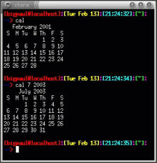 Figura 1.10. Il comando cal. |
1.9.17) Come è possibile attivare ad ogni avvio la spia della tastiera relativa al tasto [BlocNum]?
Se da BIOS non è possibile impostare la spia, si dovrà operare in maniera diversa a seconda della distribuzione che si possiede.
Con questa distribuzione, si dovranno inserire nel file /etc/rc.d/rc.sysinit le seguenti righe:
for t in 1 2 3 4 5 6
do
/usr/bin/setleds -D +num < /dev/tty$t > /dev/null
done
oppure:
INITTY=/dev/tty[1-8] for tty in $INITTY; do setleds -D +num < $tty done
In questa distribuzione, occorrerà creare uno script con le righe sopra esposte, e posizionarlo nella directory /etc/rc.boot.
In questo caso lo script andrà inserito nel file rc.keymap.
1.9.18)
Si può cancellare il contenuto della directory /tmp/ o è pericoloso?
Molti programmi in esecuzione, appoggiano alcuni file nella directory /tmp/. Può essere una buona idea ripulire quella directory prima che qualsiasi programma possa scriverci qualcosa dentro. Ecco quindi che l'avvio del sistema risulta essere il momento opportuno. Si deve allora creare uno script da inserire nella directory del sistema contenente tutti i servizi (/etc/init.d/, /etc/rc.d/init.d/, ecc.).
Alcune distribuzioni eseguono in maniera predefinita tale procedura. Lo script da inserire consta semplicemente di una riga:
rm -rf /tmp/*
1.9.19) Come si visualizza lo spazio disponibile su disco?
A tale scopo si utilizza il comando df:
# df[Invio]
Il suddetto comando restituirà la percentuale di occupazione di ciascun file system montato, lo spazio occupato e lo spazio residuo. Mediante l'opzione -h, lo spazio residuo verrà visualizzato in maniera più chiara. L'opzione -T mostrerà anche il tipo di ogni file system.
1.9.20) Come si possono visualizzare le variabili d'ambiente?
Per visualizzare le variabili, occorre digitare:
# printenv[Invio]
oppure:
# set[Invio]
1.9.21) Come si impostano le variabili d'ambiente?
Le variabili d'ambiente si impostano mediante il comando export:
# $ export VARIABILE=valore[Invio]
Ecco qualche esempio:
# export HOSTNAME="`cat /etc/HOSTNAME`"[Invio]
# export MOZILLA_HOME=/usr/lib/netscape[Invio]
# export MAILDIR=/var/spool/mail[Invio]
# export TERM=linux[Invio]
# export PS1='\n\u@\h:[`pwd`] [\t] --> \!\n* '[Invio]
1.9.22) Come si possono visualizzare le librerie usate da un programma?
Con il comando ldd:
# ldd programma[Invio]
1.9.23) Come mi devo comportare se un applicativo mi chiede una libreria di una versione più vecchia di quella attualmente installata nel mio sistema?
Se un programma richiede una versione di una libreria più vecchia di quella installata nel proprio sistema, a volte è sufficiente creare un collegamento simbolico alla libreria più vecchia. Il nome del collegamento simbolico dovrà essere quello della libreria di versione precedente.
Se ad esempio un programma richiedesse le librerie libjpeg 61 ma nel sistema fosse installata solo la versione 62, sarebbe sufficiente creare nella directory /usr/lib/ un collegamento simbolico alla libreria più recente:
# cd /usr/lib/[Invio]
# ln -s libjpeg.so.62 libjpeg.so.61[Invio]
1.9.24) C'è un modo per evitare di scrivere ogni volta comandi molto lunghi utilizzati di frequente?
Per fare questo, occorre ricorrere agli alias. Questi ultimi non sono altro che dei nomi cui vengono associati comandi che si usano frequentemente e che comunque presentano numerose opzioni, difficili da ricordare o troppo lunghe da digitare. Per creare un alias è sufficiente il comando alias:
# alias ls='ls -la --color'[Invio]
In questo caso basterà digitare ls per avere un elenco dettagliato e colorato di tutti i file (anche quelli nascosti). Se si intende mantenere gli alias, si dovranno inserire i comandi nel file ~/.bash_profile se sono specifici per un utente, o nel file /etc/profile se saranno tutti gli utenti del sistema a poterne beneficiare.
1.9.25) Esiste la possibilità di sospendere (ibernare) un sistema GNU/Linux?
Per abilitare questa funzione, bisogna includere tra le opzioni del kernel, il supporto per l'APM. Per sospendere il sistema si dovrà dare il comando:
# apm --suspend[Invio]
1.10.1) Dove sono raccolte le informazioni sugli utenti del sistema?
Queste informazioni sono raccolte nel file /etc/passwd. Se si usano le shadow password, si dovrà controllare anche il file /etc/shadow.
1.10.2) Dove sono raccolte le informazioni sui gruppi di utenti del sistema?
L'elenco dei gruppi di utenti è contenuto nel file /etc/group. Se si usano le shadow password, si dovrà controllare anche il file /etc/gshadow.
1.10.3) In che modo è possibile rimuovere un account di un utente?
Si può eliminare un utente dal sistema mediante il seguente comando:
# userdel IDutente[Invio](41)
Alcune distribuzioni dispongono di deluser al posto di userdel.
In ogni caso si deve ricordare che ogni utente possiede generalmente i propri dati nella directory /home/utente e la sua presenza nel sistema dipende dalle impostazioni presenti nei file /etc/passwd e /etc/group. L'eliminazione quindi di queste componenti, comporta in effetti la rimozione dell'utente dal sistema.
1.10.4) Come si cancellano tutti i file di un utente presenti nel sistema?
Il comando è:
# find / -user uid -exec rm {} \;[Invio](42)
oppure:
# find / -uid `id -u utente` | xargs rm -f[Invio]
Per evitare di commettere errori che potrebbero risultare spiacevoli è meglio controllare cosa questo comando andrà a cancellare con:
# find / -user uid | less[Invio]
1.10.5) Come si fa a diventare momentaneamente un altro utente?
Con il comando:
# su utente[Invio]
Per riassumere l'identità dell'utente precedente, si dovrà digitare:
# exit[Invio]
1.10.6) Come si cambia la propria password?
La propria password si può cambiare con:
# passwd[Invio]
1.10.7) Come si cambia la password degli utenti del sistema?
Il comando è:
# passwd utente[Invio](43)
Si deve ricordare in ogni caso che il comando deve essere impartito dall'utente root.
1.10.8) Cosa sono le password shadow?
Le password shadow si utilizzano per motivi di sicurezza. Sebbene le password presenti in /etc/passwd siano codificate, con gli strumenti necessari e con un po' di tempo, è possibile risalire alla password originale. L'accesso al file /etc/passwd è consentito a tutti gli utenti. Con le password shadow invece le password vengono mantenute nel file /etc/shadow, accessibile solo dall'utente root.
1.10.9) Come si può evitare la richiesta della password all'avvio?
Per fare ciò, occorre modificare il file che contiene le password(44). Occorrerà cancellare la password (che appare codificata) relativa all'utente desiderato.
Per esempio, se avessimo un file /etc/passwd di questo tipo:
root:Wteoh1TDSchyA:0:0:root:/root:/bin/bash studente::100:100:,,,:/home/studente:/bin/bash
se si accede al sistema in qualità di utente root verrà richiesta la password, mentre non verrà richiesta accedendo da utente studente.
1.10.10) Come si può evitare la richiesta del login e della password all'avvio?
Prima di proseguire con la spiegazione, si consiglia innanzitutto di creare un dischetto di avvio per essere in grado in ogni caso di poter accedere al sistema e poi si devono tenere presenti i seguenti tre punti:
il file /etc/inittab contiene le azioni che init deve compiere dopo l'avvio del kernel. Viene infatti lanciato mingetty o getty per effettuare il login ed abilitare i terminali virtuali. Il termine respawn (in /etc/inittab) significa che il processo indicato deve ripartire una volta che è terminato. Ecco perché, impartendo exit si ritorna al prompt del login;
la shell Bash, eseguita in modalità login come è spiegato nella LDR 1.9.3, cerca in successione diversi file di configurazione: /etc/profile, $HOME/.bash_profile, $HOME/.bash_login e $HOME/.profile e se li trova li esegue;
normalmente, dopo avere inserito login e password vengono impostate le variabili d'ambiente HOME, PATH, SHELL, TERM, MAIL e LOGNAME ed infine viene lanciata la shell dell'utente specificata in /etc/passwd. Il normale processo di login quindi, avvia anche l'interprete dei comandi adatto, impostando poi la corretta variabile d'ambiente HOME. Di conseguenza, saltando il processo di login, la HOME rimane impostata a /, e non alla directory dell'utente che accede.
Esposte queste tre premesse, ecco come procedere:
Si deve modificare il file /etc/profile:
HOME="/utente" export HOME
(45).
Occorrerà poi modificare il file /etc/inittab. Le seguenti righe:
# Run gettys in standard runlevels 1:2345:respawn:/sbin/mingetty tty1 2:2345:respawn:/sbin/mingetty tty2 3:2345:respawn:/sbin/mingetty tty3 4:2345:respawn:/sbin/mingetty tty4 5:2345:respawn:/sbin/mingetty tty5 6:2345:respawn:/sbin/mingetty tty6 # Run xdm in runlevel 5 # xdm is now a separate service x:5:respawn:/etc/X11/prefdm -nodaemon
dovranno essere modificate e se ne dovranno aggiungere altre due. Il risultato dovrà essere simile a quanto segue:
#Avvio senza login 1:12345:wait:/bin/bash -login # Run gettys in standard runlevels #1:2345:respawn:/sbin/mingetty tty1 #2:2345:respawn:/sbin/mingetty tty2 #3:2345:respawn:/sbin/mingetty tty3 #4:2345:respawn:/sbin/mingetty tty4 #5:2345:respawn:/sbin/mingetty tty5 #6:2345:respawn:/sbin/mingetty tty6 # Run xdm in runlevel 5 # xdm is now a separate service # x:5:respawn:/etc/X11/prefdm -nodaemon
Il termine wait significa che si deve aspettare la fine del processo ma questo, una volta terminato, non sarà riavviato. Infatti, digitando exit al prompt, l'interprete dei comandi si chiuderà e sarà necessario avviare lo spegnimento.
Attenzione, non sarà più possibile passare da un terminale virtuale all'altro mediante la combinazione [Alt+Fx], in quanto questi non sono stati attivati (le righe che servono per dichiararli, sono state commentate nel file /etc/inittab tramite #).
1.10.11) Cosa si deve fare se si dimentica la password di root?
Nel caso si dimentichi la password di root, quello che si deve avere come obiettivo è quello di potere arrivare a modificare il file /etc/passwd (o /etc/shadow se si utilizzano le password shadow).
All'interno di uno o dell'altro, si troveranno tutti i dati relativi agli utenti, con le password codificate. Si dovrà cancellare il campo della password di root.
Questo permetterà all'utente root di accedere al sistema senza la richiesta di una password. Una volta ottenuto l'accesso, si dovrà riassegnare una nuova password all'utente root tramite il comando passwd.
Ci sono vari modi per poter arrivare a modificare quel file:
Al prompt di LILO occorrerà digitare:
LILO boot: linux single[Invio]
Se questo metodo avrà successo, si otterrà accesso al sistema in qualità di utente root e si potranno apportare le modifiche necessarie;
Si potrà montare la partizione contentente la directory /etc/ da un'eventuale altra distribuzione presente nel sistema;
Si potrà utilizzare il disco fisso su un'altra macchina e lo si potrà montare;
Si potrà utilizzare una delle numerose minidistribuzioni GNU/Linux presenti su dischetto o su CD-ROM per montare la partizione contenente /etc/.
1.10.12)
A cosa serve il file /etc/.pwd.lock?
Questo file, se presente, nega la possibilità di accedere in scrittura al file /etc/passwd.
1.10.13) Come si fa a sapere chi è connesso attualmente al sistema?
Mediante i comandi w o who:
# w[Invio]
o:
# who[Invio]
Il comando restituirà qualcosa simile a questo:
9:42pm up 1:45, 4 users, load average: 0.00, 0.00, 0.00 USER TTY FROM LOGIN@ IDLE JCPU PCPU WHAT bigpaul tty1 - 7:57pm 1:23 24.06s 23.97s mc giovann tty2 - 8:51pm 0.00s 0.20s ? - mirco69 tty3 - 9:04pm 38:36 8.29s 0.02s sh /usr/bin/X11 bigpaul tty4 - 9:41pm 42.00s 0.09s 0.09s -bash
1.10.14) Come si cambia proprietario di un file?
La sintassi da utilizzare è:
# chown nuovopropietario.nuovogruppo file[Invio]
Se si volesse cambiare solo il proprietario, il comando sarà:
# chown nuovoproprietario file[Invio]
1.10.15) Come si cambia il gruppo di un file?
La sintassi da utilizzare è:
# chown nuovopropietario.nuovogruppo file[Invio]
Se invece si volesse cambiare solamente il gruppo di un file, i comandi saranno:
# chgrp nuovogruppo file[Invio]
o:
# chown .nuovogruppo file[Invio](46)
1.11.1) Come si conferisce il permesso di esecuzione ad un file?
Ecco alcuni comandi che conferiscono il permesso di esecuzione ad alcuni file:
$ chmod a+x file[Invio]
conferisce il permesso di esecuzione a tutti gli utenti del sistema;
$ chmod u+x file[Invio]
conferisce il permesso di esecuzione esclusivamente al proprietario del file;
$ chmod g+x file[Invio]
conferisce il permesso di esecuzione al gruppo;
$ chmod o+x file[Invio]
conferisce il permesso di esecuzione agli altri utenti;
Si possono anche combinare le varie opzioni:
$ chmod ug+x file[Invio]
1.11.2) Come si conferisce il permesso di lettura ad un file?
Si seguiranno le stesse indicazioni del permesso di esecuzione (1.11.1), sarà però necessario sostituire x con r.
$ chmod a+r file[Invio]
conferisce il permesso di lettura a tutti gli utenti del sistema;
$ chmod u+r file[Invio]
conferisce il permesso di lettura esclusivamente al proprietario del file;
$ chmod g+r file[Invio]
conferisce il permesso di lettura al gruppo;
$ chmod o+r file[Invio]
conferisce il permesso di lettura agli altri utenti;
Si possono anche combinare le varie opzioni:
$ chmod ug+r file[Invio]
1.11.3) Come si conferisce il permesso di scrittura ad un file?
Si seguiranno le stesse indicazioni del permesso di esecuzione (1.11.1), sarà però necessario sostituire x con w.
$ chmod a+w file[Invio]
conferisce il permesso di scrittura a tutti gli utenti del sistema;
$ chmod u+w file[Invio]
conferisce il permesso di scrittura esclusivamente al proprietario del file;
$ chmod g+w file[Invio]
conferisce il permesso di scrittura al gruppo;
$ chmod o+w file[Invio]
conferisce il permesso di scrittura agli altri utenti;
Si possono anche combinare le varie opzioni:
$ chmod ug+w file[Invio]
1.11.4) Come si conferiscono i permessi alle directory?
Per cambiare i permessi delle directory si seguono le stesse regole utilizzate per i file (1.11.1).
1.11.5) Qual è il significato del permesso di esecuzione di una directory?
Questo permesso, se abilitato, permette di poter accedere alla directory in questione mediante il comando chdir. In caso contrario verrà restituito un messaggio di Permesso negato. Ecco un esempio pratico:
[bigpaul@localhost]:[Tue Dec 12]:[22:13:45]:[~/temp3]: --> su Password: [root@localhost]:[Tue Dec 12]:[22:13:48]:[/home/bigpaul/temp3]: --> mkdir alfa [root@localhost]:[Tue Dec 12]:[22:13:59]:[/home/bigpaul/temp3]: --> chown root.root alfa/ [root@localhost]:[Tue Dec 12]:[22:14:23]:[/home/bigpaul/temp3]: --> exit exit [bigpaul@localhost]:[Tue Dec 12]:[22:14:27]:[~/temp3]: --> cd alfa [bigpaul@localhost]:[Tue Dec 12]:[22:14:30]:[~/temp3/alfa]: --> cd .. [bigpaul@localhost]:[Tue Dec 12]:[22:14:34]:[~/temp3]: --> su Password: [root@localhost]:[Tue Dec 12]:[22:14:38]:[/home/bigpaul/temp3]: --> chmod o-x alfa/ [root@localhost]:[Tue Dec 12]:[22:14:43]:[/home/bigpaul/temp3]: --> exit exit [bigpaul@localhost]:[Tue Dec 12]:[22:14:45]:[~/temp3]: --> cd alfa/ bash: cd: alfa/: Permesso negato [bigpaul@localhost]:[Tue Dec 12]:[22:14:47]:[~/temp3]: -->
1.11.6) Come posso concedere i permessi di lettura e scrittura su partizioni vfat agli utenti del sistema?
Si deve utilizzare il comando umask. Per dare ad esempio il permesso di lettura e scrittura sul primo disco fisso della catena IDE/EIDE a tutti gli utenti del sistema si deve inserire la seguente riga nel file /etc/fstab:
/dev/hda1 /mnt/win vfat quiet,users,umask=000 0 0
I tre numeri dopo umask sono i parametri che impostano i permessi rispettivamente del proprietario del file, del gruppo cui appartiene il file, e di tutti gli altri; essi indicano quali permessi vengono tolti. Nell'esempio non viene tolto nessun permesso a nessuno. Si dovrebbe invece impostare:
umask=022
se si volessero assegnare i permessi di scrittura solamente al proprietario; oppure:
umask=066
se si volessero assegnare i permessi di lettura e scrittura solamente al proprietario.
1.11.7) Come si impostano i permessi predefiniti dei file e delle directory?
Se si desidera che i propri file assumano permessi predefiniti sarà necessario utilizzare il comando umask. In genere questo comando viene inserito nei file che la shell legge quando viene inizializzata (47).
Il valore da assegnare a umask viene calcolato sottraendo i permessi che si desiderano dal valore massimo. Si assume per definizione che i file siano non eseguibili per cui il loro valore massimo sarà 666. Se quindi si desidera che i file assumano permessi 664 il valore da assegnare a umask sarà 002. Per le directory, il valore predefinito è 777. Se anche qui si utilizzerà il valore 002, questo valore fornirà alle directory i permessi 775.
1.12.1) Come si copiano i file?
cp origine destinazione
Con il comando:
# cp /opt/images/dog.png /home/pino/[Invio]
l'utente root, copierà il file dog.png dalla directory /opt/images/ alla directory /home/pino/. Utilizzando la seguente sintassi:
cp -i origine destinazione
verrà chiesta conferma prima di sovrascrivere un file. Se durante la copia dei file si vogliono copiare i collegamenti simbolici e mantenerli come tali si deve utilizzare l'opzione -d. Se questo è richiesto durante la copia di directory con sottodirectory, l'opzione -r diventerà -R.
1.12.2) Come si cancellano i file?
rm file
Per esempio:
# rm *.html[Invio]
cancellerà tutti i file con estensione .html. Per abilitare la richiesta di conferma della cancellazione per ogni file, si dovrà aggiungere l'opzione -i:
# rm -i *.html[Invio]
1.12.3) Come si spostano i file?
mv origine destinazione
Per esempio:
# mv /root/dog.png /home/pino/[Invio]
consentirà all'utente root di spostare il file dog.png dalla directory /root/ alla directory /home/pino/.
1.12.4) Qual è in GNU/Linux l'equivalente di DIR *.HTML /S del Dos?
DIR *.HTML /S in un sistema Dos, permette di visualizzare tutti i file .html presenti nella directory da cui si è impartito il comando ed in tutte le discendenti. Il comando da impartire in un sistema GNU/Linux è il seguente:
# find . -name "*.html"[Invio]
oppure:
# find . -print | grep -i "html$" > ./all_html.txt[Invio]
1.12.5) Come si può evitare la cancellazione di un file da parte dell'utente root?
Per evitare che inavvertitamente anche l'utente root possa cancellare determinati tipi di file, è necessario cambiare gli attributi dei file stessi. Questa operazione è consentita esclusivamente su file system Second-extended (Ext2). Per esempio, se un file è stato impostato dall'utente root con il comando:
# chattr +i file[Invio]
esso non potrà venire rinominato, cancellato, modificato da nessuno, (utente root compreso), almeno non prima che l'attributo i venga tolto con:
# chattr -i file[Invio]
Ecco un estratto della pagina di manuale chattr(1), in cui vengono elencati gli altri attributi.
ATTRIBUTI
Un file con l'attributo 'a' impostato può essere aperto
per la scrittura solo in modo append.
Un file con l'attributo `c' impostato è compresso auto-
maticamente sul disco dal kernel. Una lettura di questo
file restituisce i dati decompressi. Una scrittura su
questo file comprime i dati prima di salvarli sul disco.
Un file con l'attributo `d' impostato non è un candidato
per il backup quando viene lanciato il programma dump(8).
Un file con l'attributo `i' impostato non può essere modi-
ficato: non può essere cancellato o rinominato, non può
essere creato alcun link verso questo file e nessun dato
può essere scritto sul file. Solo il superuser può mettere
e togliere questo attributo.
Quando un file con l'attributo `s' è cancellato, i suoi
blocchi sono azzerati e poi scritti sul disco.
Quando è modificato un file con l'attributo `S', i
E2fsprogs versione 1.06 Ottobre 1996 1
CHATTR(1) CHATTR(1)
cambiamenti sono scritti in modo sincrono sul disco; ciò è
equivalente alla opzione di mount `sync' applicata ad un
sottoinsieme di file.
Quando un file con l'attributo `u' è cancellato, il suo
contenuto è salvato. Ciò permette all'utente di chiedere
il suo ripristino.
1.12.6) Come si esegue la copia di un'intera porzione del file system?
Il comando da utilizzare è cp con l'opzione -av:
# cp -av origine destinazione [Invio](48)
Se si aggiunge anche l'opzione -x (--one-file-system) verranno escluse dalla copia le sottodirectory che risiedono su file system diversi da quello da cui si è impartito il comando di copia.
1.12.7) Esiste la funzione undelete in GNU/Linux?
Alcune delle tecniche che si possono utilizzare per effettuare il recupero dei file cancellati su un file system Ext2 sono descritte nel Linux Ext2fs Undeletion mini-HOWTO (<http://www.praeclarus.demon.co.uk/tech/e2-undel/>)
In questo HOWTO si parla di una caratteristica apposita del Midnight Commander, che sembra ideale per utenti alle prime armi. Si deve tenere presente che la cancellazione, nei file system ad inode (quasi tutti quelli basati su UNIX, HPFS, NTFS, ecc.) avviene diversamente dai sistemi Dos o MS-Windows. In questi ultimi infatti, la cancellazione di un file non è altro che la sostituzione del primo carattere del nome del file (sostituito con «?») all'interno della tavola delle partizioni (FAT). Diverso e più complesso è il sistema di cancellazione nei file system ad inode. Quello che fa Midnight Commander non è altro che la sostituzione del comando rm con un comando che sposta il file su una directory prestabilita. Da quest'ultima sarà eventualmente possibile recuperare i file cancellati.
1.12.8) In che posizione del file system mi trovo?
Per visualizzare la posizione del file system in cui ci si trova durante l'utilizzo di un terminale, sarà sufficiente impartire il comando pwd dalla riga di comando:
$ pwd[Invio]
1.12.9) Come si visualizza il contenuto di un file?
Ci sono diversi metodi.
$ cat file[Invio]
mostra tutto il contenuto di un file;
$ more file[Invio]
mostra il contenuto del file una schermata alla volta;
$ less file[Invio]
mostra il contenuto del file una schermata alla volta, consente di poter scorrere all'indietro mostrando anche le porzioni di file già visualizzate; per uscire da questa modalità di visualizzazione, si prema il tasto [q].
1.12.10) Come si visualizza la riga numero n di un file?
Per visualizzare una riga specifica di un file, si utilizzano tre programmi concatenati tra loro: cat, head e tail:
$ cat file | head -n | tail -1[Invio](49)
1.12.11) Come si visualizza il contenuto di una directory?
Ci sono vari modi:
Il comando predefinito deputato alla visualizzazione del contenuto di una directory è ls:
$ ls[Invio]
per visualizzare tutti i file, compresi quelli nascosti e i relativi permessi, si darà il comando:
$ ls -la[Invio]
per visualizzare il contenuto della directory corrente, una schermata alla volta, si darà il comando:
$ ls -la | more[Invio](50)
per creare un file chiamato testo contenente l'elenco del contenuto della directory corrente, si dovrà impartire il seguente comando:
$ ls -la > testo[Invio]
per aggiungere il contenuto di un'altra directory al file, il comando sarà:
$ ls -la >> testo[Invio]
per visualizzare in ordine il contenuto della directory corrente una schermata alla volta dovremo dare il comando:
$ ls | sort | more[Invio](51)
per visualizzare con colori:
$ ls --color[Invio]
1.12.12) Come si visualizza il contenuto di una directory a colori?
Per visualizzare con colori uguali, tipi di file uguali (directory, eseguibili, ecc.) si dovrà dare il comando:
$ ls --color[Invio]
Per non ripetere ogni volta il comando, si può inserire all'interno dei file che la shell legge al suo avvio(52), la seguente riga:
alias ls='ls -la --color'
1.12.13) Come si visualizza il contenuto della directory corrente e delle sue discendenti compreso di percorso?
Per poter visualizzare l'elenco dei file contenuti nella directory corrente e nelle sue discendenti, includendo anche il percorso, occorre impartire il seguente comando:
$ find .[Invio]
1.12.14) Come si visualizza il contenuto di tutti i file di una directory?
|
si deve ricordare in ogni caso che ci si riferisce esclusivamente a file di testo dal momento che la visualizzazione di un file non testuale genererebbe una serie di caratteri incomprensibili. |
Si può visualizzare il contenuto di tutti i file di una directory mediante il comando:
$ cat /percorso/* | less[Invio]
o mediante il comando:
$ less /percorso/*[Invio]
Per visualizzare quindi, il contenuto di tutti i file presenti nella directory corrente sarà sufficiente il comando:
$ less *[Invio]
1.12.15) Come si visualizza il contenuto di uno stesso file presente in diverse directory?
Se si volesse ad esempio visualizzare il contenuto di tutti i file rp_filter presenti nelle varie directory contenute in /proc/sys/net/conf/ con un solo comando, si potrà scegliere tra queste metodiche:
# cat `find /proc/sys/net/conf -name rp_filter -print`[Invio]
# for i in `find /proc/sys/net/conf -name rp_filter (segue)[Invio]
-print` ; do echo $i; cat $i; done
# find /proc/sys/net/conf -name rp_filter (segue)[Invio]
-exec "echo '{}' && cat '{}'" ;
1.12.16) Perché less disattiva la colorazione di ls?
Utilizzando il comando:
$ ls --color | more[Invio]
la colorazione fornita dall'opzione --color di ls viene preservata. Se invece si utilizza il comando:
$ ls --color | less[Invio]
si ottengono delle scritte come queste:
ESC[01;34mat-3.1.7ESC[0m/
ESC[01;34maudiofile-0.1.6ESC[0m/
ESC[01;34maumix-1.18.2ESC[0m/
ESC[01;34mawesfx-0.4.3aESC[0m/
Questo accade perché less protegge il terminale evitando di mandare sequenze di caratteri che potrebbero sporcarlo. A volte però questo non funziona e si deve utilizzare l'opzione -r.
Per mantenere la colorazione quindi anche con l'utilizzo di less si dovrà dare il comando:
# ls -alF --color=always |less -r[Invio]
In questo caso si consiglia l'utilizzo di un alias.
1.12.17) Come si crea un file vuoto?
Il comando touch serve per creare un file vuoto:
# touch file[Invio]
Se invece all'atto della creazione si volesse cominciare a scriverci qualcosa si utilizzerà il comando:
# cat > file[Invio]
che permetterà all'utente di scriverne il contenuto fino alla pressione della combinazione di tasti [Ctrl+d].
1.12.18) Come si uniscono più file di testo?
Un metodo è quello di unire un file alla volta al file destinazione (ris.txt):
$ cat file1.txt > ris.txt[Invio]
$ cat file2.txt >> ris.txt[Invio]
$ cat file3.txt >> ris.txt[Invio]
Un altro metodo è quello di unire tutti i file allo stesso istante:
$ cat file1.txt file2.txt file3.txt > ris.txt[Invio]
1.12.19) Come si fa a conoscere il tipo di un file?
Si può conoscere il tipo di file mediante il comando file:
$ file file[Invio]
1.12.20) Come si può mettere il contenuto di un file in ordine alfabetico?
Si deve utilizzare il comando sort nella seguente maniera:
$ sort < origine.txt > destinazione.txt[Invio](53)
1.12.21) Come si creano le directory?
Le directory si creano con il comando mkdir:
$ mkdir nome[Invio]
oppure:
$ mkdir /percorso/nome[Invio]
1.12.22) Come si cancellano le directory?
Per cancellare una directory si dovrà dare il comando:
$ rmdir nome[Invio]
La directory però deve essere già stata svuotata del suo contenuto. Se si è sicuri di cosa si sta facendo, si può cancellare una directory e tutto il suo contenuto con il comando:
$ rm -rf /prova[Invio]
|
Attenzione: è un comando cui bisogna prestare attenzione. |
1.12.23) Cosa sono gli attributi estesi? É vero che se conferiti ad un file, ne impediscono la cancellazione anche da parte dell'utente root?
Gli attributi dei file sono di varia natura. Il comando chattr serve per modificarli. Si faccia riferimento alla LDR 1.12.5 per una trattazione più esauriente.
1.12.24) Come ci si sposta tra le directory del file system?
Il comando cd serve a muoversi tra le directory del file system. Occorre impartire il comando:
$ cd nome[Invio]
per entrare in una directory contenuta in quella attuale;
$ cd /nome/nome2/[Invio]
per entrare nella directory nome2/ contenuta in /nome/;
$ cd ..[Invio]
per tornare alla directory di livello superiore di quello attuale;
$ cd ~[Invio]
per tornare alla directory home;
$ cd ../conti[Invio]
per spostarmi alla directory conti, che è dello stesso livello della directory corrente;
$ cd -[Invio]
per tornare nella directory da cui si è giunti in quella corrente.
1.12.25) Quali sono le differenze tra collegamenti soft e hard?
Un collegamento soft è praticamente un nome diverso che viene dato allo stesso file. Non occupa spazio su disco (se non per un inode). Un collegamento hard è praticamente una copia fisica del file; inoltre ogni cambiamento fatto all'originale (o alla copia) risulterà effettuata anche sulla copia (o sull'originale).
Se si cancella un collegamento soft il file originale viene perso; se invece c'è un collegamento hard e si cancella l'originale, il collegamento (ed il suo contenuto) non verranno modificati.
1.12.26) Come si crea un collegamento simbolico?
Il comando da dare è:
# ln -s /home/mario/resoconto.txt /root/resocontomario[Invio]
dove /home/mario/resoconto.txt è il file che già esiste e al quale vogliamo fare il collegamento simbolico (/root/resocontomario).
1.12.27) Come si fa a trovare un file in tutto il file system?
Ricercare un file in tutto il file system è un'operazione che si può fare mediante il comando:
# find / -name nomefile -print[Invio](54)
Un altro metodo consiste nell'impartire il comando locate:
# locate nomefile[Invio](55)
locate è decisamente più veloce del comando find, ma per usarlo bisogna prima aggiornare il suo archivio impartendo in qualità di utente root il comando updatedb:
# updatedb[Invio]
1.12.28) Come si fa a trovare un file in una porzione del file system?
Se invece di tutto il file system si volesse ricercare un file nella directory /var/ e in tutte le sue discendenti, dovremo impartire il comando:
# find /var -name nomefile -print[Invio](56)
1.12.29) Con che comando posso copiare un file dopo averlo ricercato nel file system?
Se si volessero ricercare all'interno del file system tutti i file .png e una volta trovati copiarli nella directory /home/tizio/pngfile/, si dovrà dare il seguente comando:
# find / -name "*.png" -exec cp -p {} /home/tizio/pngfile/ \;[Invio]
1.12.30) Quali sono i file della directory corrente che contengono una stringa?
Se si volesse visualizzare il nome dei file che contengono la stringa «resoconti», si dovrà utilizzare il comando grep nel seguente modo:
$ grep resoconti *[Invio](57)
Lo stesso compito può essere svolto dal comando:
$ find percorso -print -exec grep resoconti {} \;[Invio](58)
1.12.31) Quali sono i file del file system che contengono una stringa?
Il comando da impartire è il seguente:
$ rgrep -r stringa directory[Invio](59)
oppure un comando equivalente è:
$ find directory -type f -exec grep -l stringa {} \;[Invio](60)
1.12.32) Come si visualizzano i nomi dei file che iniziano con una determinata stringa?
Per visualizzare tutti i file presenti nel file system il cui nome inizia per «conf», si darà il comando:
# find / -name conf\*[Invio]
oppure, lo stesso risultato si otterrà con il comando:
# find / -name "conf*"[Invio]
1.12.33) Come si possono suddividere in più parti i file di grandi dimensione?
Per spezzettare un file di grandi dimensioni, occorre utilizzare il comando split:
$ split -b 1400k file[Invio]
Il comando ora esposto, suddivide file in parti da 1 400 Kibyte ciascuna che prendono in maniera predefinita il nome di xaa, xab, ecc.
Quando si avrà la necessità di riunire le parti suddivise per ricreare il file originario, si darà il comando:
$ cat xaa xab [...] > nome[Invio](61)
Se nella directory corrente i file che iniziano con x sono esclusivamente i file suddivisi, un comando più diretto è:
$ cat x* > nome[Invio]
In alternativa a questa metodica è possibile utilizzare tar con l'opzione M, scrivendo direttamente su /dev/fd0 cioè su dischetto. Occorre in ogni caso prestare attenzione perché tar scrive direttamente sul disco senza badare al file system. Il dischetto quindi andrà riformattato per un successivo riutilizzo.
Il comando che segue permette di archiviare su più dischetti un file (file):
$ tar cvfM /dev/fd0 file[Invio]
Tra un dischetto e quello successivo, tar mostrerà una richiesta del genere:
Prepara il volume #2 per `/dev/fd0' e premi return:
Per ripristinare il file suddiviso, dopo essersi posizionati nella directory destinazione, si darà il comando:
$ tar xvfM /dev/fd0[Invio]
1.13.1) Come si utilizzano le variabili nella shell Bash?
In genere si utilizzano nomi di variabili con caratteri maiuscoli e si dichiarano dalla riga di comando nel seguente modo:
NOMEVARIABILE=valore
Il successivo utilizzo della variabile si effettua aggiungendo il carattere $ davanti al nome della variabile. Ecco un esempio:
$ RICOMP_KERNEL=/usr/src/linux[Invio]
$ cd $RICOMP_KERNEL[Invio]
Per visualizzare tutte le variabili d'ambiente del sistema si utilizza il comando:
# set[Invio]
Per vedere il contenuto di una variabile si utilizza il comando:
# echo $NOME_VARIABILE[Invio]
per svuotarne il contenuto si usa:
# unset NOME_VARIABILE[Invio]
La dichiarazione delle variabili è limitata alla shell corrente. I comandi esterni alla shell non ricevono la dichiarazione di queste variabili. Per fare in modo che anche essi ne possano beneficiare, si deve utilizzare il comando export:
# export NOME_VARIABILE[Invio]
1.13.2) Come si può personalizzare il prompt?
Per personalizzare l'aspetto del prompt della shell Bash, si dovrà modificare la variabile PS1 utilizzando dei codici speciali.
L'elenco dei codici speciali presente nella tabella 1.1 è tratto da Appunti di informatica libera di Daniele Giacomini. (<a2.swlibero.org>)
Tabella 1.1. Elenco dei codici speciali per definire il prompt.
Ecco una serie di esempi di prompt:
export PS1='\[\033[1;34m\]\n\u@\h \[\033[1;33m\]---\[\033[1;34m\ ][`pwd`] \[\033[1;33m\]---\[\033[1;34m\] [\t]\[\033[1;33m\]--- \ [\033[1;31m\]\!\n\[\033[1;31m\]*\[\033[0;37m\] '
Questa configurazione genererà un prompt simile a questo:
bigpaul@localhost ---][/home/bigpaul/LDR] --- [21:58:48]--- [a530 * _
|
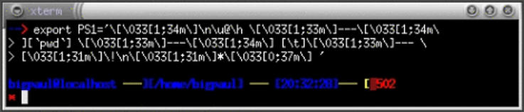 Figura 1.11. Esempio di prompt. |
export PS1="\[\033[1;31m\][\u@\h]\[\033[1;35m\]:\ [\033[1;33m\][\d]\[\033[1;35m\]:\[\033[1;36m\][\t] \[\033[1;35m\]:\[\033[1;32m\][\w]\[\033[1;35m\]:\n\[\033[0;34m\] -\[\033[1;34m\]-\[\033[1;31m\]>\033[1C\[\033[0m\]"
Questa configurazione genererà un prompt simile a questo:
[bigpaul@localhost]:[a[Fri Dec 15]:[22:03:35] :[~/LDR]: -->_
|
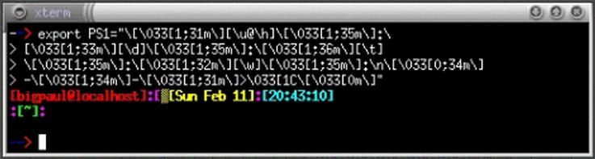 Figura 1.12. Esempio di prompt. |
export PS1="\[\033[0;44m\]\u@\h \[\033[1;45m\]\w\[\033[0;39m\]# "
Questa configurazione genererà un prompt simile a questo:
bigpaul@localhost ~/LDR# _
|
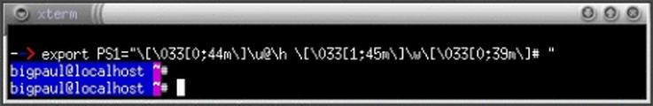 Figura 1.13. Esempio di prompt. |
export PS1="\[\033[1;34m\]\n\u@\h \[\033[1;33m\]--- \[ \033[1;34m\]\w\[\033[1;33m\]---\[\033[1;34m\] [\t] \[\033[1;33m\]--- \[\033[1;31m\]\!\n\[\033[1;31m\]$\[\033[0;39m\] "
Questa configurazione genererà un prompt simile a questo:
bigpaul@localhost --- ~/LDR--- [22:06:10] --- 533 $ _
|
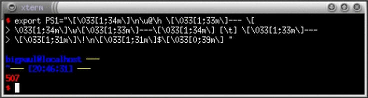 Figura 1.14. Esempio di prompt. |
YLOBRN='\[\033[01;33;43m\]'
WHTBRN='\[\033[01;37;43m\]'
REDBRN='\[\033[00;31;43m\]'
REDBLK='\[\033[00;31;40m\]'
PPLBLK='\[\033[01;35;40m\]'
WHTBLK='\[\033[01;37;40m\]'
NONE='\[\033[00m\]'
HBLK='\[\033[00;30;30m\]'
HBLU='\[\033[01;34;34m\]'
BLU='\[\033[00;34;34m\]'
YEL='\[\033[00;33;33m\]'
WHT='\[\033[01;37;37m\]'
PRPL='\[\033[00;34;35m\]'
RED='\[\033[01;31;31m\]'
NORM='\[\033[01;00;0m\]'
CYAN='\[\033[00;31;36m\]'
case "$TERM" in
xterm | xterm-color | xterm-debian | rxvt)
# nei terminali grafici (xterm) imposta anche il titolo della finestra e dell'icona
PS1="\[\033]1;\u: \w\007\033]2;\u: \w\007\033[01;37m\]$NORM\u@\h:
$WHT\w $HBLU<\t>$NORM\n$CYAN"'\$'"$NORM "
;;
linux)
# in console
PS1="$NORM\u@\h: $WHT\w $HBLU<\t>$NORM\n$CYAN"'\$'"$NORM "
;;
*)
# altrimenti un prompt semplice
PS1='\u@\h: \w \$ '
;;
esac
export PS1
Questa configurazione genererà un prompt simile a questo:
bigpaul@localhost: ~/LDR <22:07:01> $ _
|
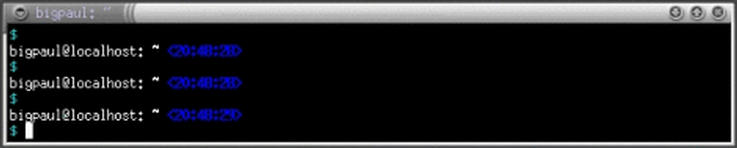 Figura 1.15. Esempio di prompt. |
1.13.4) Come si disabilita una console virtuale?
Occorre modificare il file /etc/inittab. All'interno di questo file troviamo una serie di righe simile alle seguenti:
1:2345:respawn:/sbin/getty 38400 tty1 2:23:respawn:/sbin/getty 38400 tty2 3:23:respawn:/sbin/getty 38400 tty3 4:23:respawn:/sbin/getty 38400 tty4 5:23:respawn:/sbin/getty 38400 tty5 6:23:respawn:/sbin/getty 38400 tty6
Queste righe sono corrispondenti alle sei console virtuali. Per disabilitarne una o più di una si dovrà inserire un simbolo di commento (#) all'inizio della riga corrispondente alla console da disabilitare.
1.13.5) Che significato hanno gli apici inversi (`) nella shell?
La shell effettua un'espansione, eseguendo il comando all'interno degli apici inversi e catturandone lo standard output. Quest'ultimo verrà poi opportunamente sostituito all'interno del comando originario.
Ecco un esempio:
# ls -l `which cat`[Invio](62)
In questo comando `which cat` ha come standard output:
/bin/cat
ls -l /bin/cat
Lo stesso discorso funziona ovviamente anche con le variabili. Se ad esempio dichiariamo la variabile PROVA nel seguente modo:
# PROVA=`cat /etc/inetd.conf`[Invio]
Con il comando:
# echo $PROVA[Invio]
verrà visualizzato il contenuto del file /etc/inetd.conf. Gli apici inversi risultano quindi molto utili; vediamo un altro esempio:
# kill -1 `pidof inetd`[Invio]
Il comando pidof inetd restituirà allo standard output l'attuale PID di inetd, facilitando quindi l'applicazione del comando kill.
1.13.6) Come funziona history, lo storico dei comandi?
Se si impartisce il comando:
# history[Invio]
verrà visualizzata una lista dei comandi eseguiti dall'utente fino a quel momento. Ad ogni comando sarà associato un numero. Per eseguire nuovamente uno di questi comandi si utilizza il punto esclamativo (!) seguito dal numero che identifica il comando. Ecco un esempio:
$ !267[Invio]
Per richiamare dallo storico dei comandi l'ultimo comando che inizia con una determinata stringa si utilizza:
# !stringa[Invio]
Se ad esempio il comando history avesse restituito:
185 less README 186 cp Makefile /opt/Make/ 187 less INSTALL 188 dmesg
il comando:
# !less[Invio]
eseguirà nuovamente:
# less INSTALL[Invio]
1.13.7)
Come si possono reindirizzare i messaggi di /dev/console su un'altra console?
Per poter far questo, occorre aggiungere al file /etc/lilo.conf la riga:
append="console=tty6"
nella sezione image.
Esempio:
image=/boot/vmlinuz-2.0.36-1 label=linux root=/dev/hda2 append="console=tty6" read-only
Dopo avere apportato questa modifica, occorrerà dare il comando:
# /sbin/lilo[Invio]
per rendere effettive le modifiche.
1.13.8) Come si può impostare la modalità grafica della console?
se si utilizza LILO come gestore degli avvii, si può utilizzare l'opzione vga. Inserendo:
vga=extended
nel file di configurazione di LILO si otterrà una risoluzione di 80 colonne per 50 righe.
Ecco la pagina di manuale lilo.conf(5) che spiega anche gli altri attributi di vga:
vga=modo
Ciò specifica il modo testo VGA che dovrebbe essere
selezionato quando si fa il boot. Sono riconosciuti
i seguenti valori (caratteri minuscoli e maiuscoli
sono equivalenti):
normal: seleziona il normale modo testo 80x25.
extended (o ext): seleziona il modo testo 80x50.
ask: si ferma e attende un input dall'utente.
28 luglio 1995 8
LILO.CONF(5) LILO.CONF(5)
<numero>: usa il modo testo corrispondente. Una
lista dei modi disponibili la si può ottenere
facendo il boot con vga=ask e premendo [Invio].
Se è omessa questa variabile, è usato il modo VGA
configurato nell'immagine del kernel (che è
impostato al momento della compilazione usando la
variabile SVGA_MODE nel Makefile del kernel, e che
più tardi può essere cambiato con il programma
rdev(8)).
Ricordiamo infine che la risoluzione predefinita è impostata attraverso la variabile SVGA_MODE presente nel Makefile del kernel (generalmente in /usr/src/linux/). Il modo VGA predefinito potrà essere in seguito cambiato con il comando rdev.
1.13.9) shell-init: could not get current directory: getcwd: cannot access parent directories
Questo messaggio può venire visualizzato quando si cerca di assumere l'identità di un altro utente ma si incontrano dei problemi relativi al fatto che non vengono annullate le impostazioni del vecchio utente e non si caricano le impostazioni del nuovo. Per tentare di risolvere il problema, invece del comando:
# su utente[Invio]
si impartirà:
$ su - utente[Invio]
In questo modo la shell dell'utente sarà una shell di login. Ecco un estratto della pagina di manuale su(1):
-, -l, --login
Rende la shell una shell di login. Ciò implica le
seguenti cose. Annulla tutte le variabili d'ambi
ente ad eccezione di `TERM', `HOME', e `SHELL' (le
quali sono impostate come già descritto), e di
`USER' e `LOGNAME' (che sono impostate, anche per
il superuser, come descritto sopra), e assegna a
`PATH' il valore di default precompilato. Cambia
alla home directory dell'UTENTE. Prepone "-" al
nome della shell, per far sì che essa legga i pro
pri file di inizializzazione.
1.14.1) Come si visualizzano i registri (log) degli accessi?
Il comando per visualizzare i log di tutti gli accessi al sistema è last. Il risultato di questo programma può essere molto lungo per cui è meglio visualizzarlo a pagine mediante less (o more):
# last | less[Invio]
Se si desidera invece visualizzare gli ultimi n accessi, il comando sarà:
# last -n[Invio]
1.14.2) Di chi si occupa della registrazione degli eventi del sistema?
È il demone syslogd che trova il suo file di configurazione in /etc/syslogd.conf. In quest'ultimo infatti sono dichiarati tutti i file che ospiteranno i messaggi delle diverse attività del sistema. Eccone un estratto:
#
# First some standard logfiles. Log by facility.
#
auth,authpriv.* /var/log/auth.log
*.*;auth,authpriv.none -/var/log/syslog
#cron.* /var/log/cron.log
daemon.* -/var/log/daemon.log
kern.* -/var/log/kern.log
lpr.* -/var/log/lpr.log
mail.* /var/log/mail.log
user.* -/var/log/user.log
uucp.* -/var/log/uucp.log
#
# Logging for the mail system. Split it up so that
# it is easy to write scripts to parse these files.
#
mail.info -/var/log/mail.info
mail.warn -/var/log/mail.warn
mail.err /var/log/mail.err
# Logging for INN news system
#
news.crit /var/log/news/news.crit
news.err /var/log/news/news.err
news.notice -/var/log/news/news.notice
#
# Some `catch-all' logfiles.
#
*.=debug;\
auth,authpriv.none;\
news.none;mail.none -/var/log/debug
*.=info;*.=notice;*.=warn;\
auth,authpriv.none;\
cron,daemon.none;\
mail,news.none -/var/log/messages
1.14.3) Come si possono ricavare informazioni dai file di log?
Il meccanismo principale utilizzato dalla maggior parte dei sistemi UNIX per registrare le attività del sistema è il demone syslogd, anche se alcune macchine UNIX hanno dei demoni appositi che creano file di log binari consultabili esclusivamente con appositi programmi proprietari.
I sistemi GNU/Linux utilizzano generalmente syslogd. In genere syslogd (ma anche questo dipende dalla distribuzione e può essere cambiato dall'amministratore) registra tutto nella directory /var/log/. Red Hat ad esempio registra il comportamento dei demoni in daemon.log presente in /var/log/, e ha anche altri file di log oltre al consueto messages.
In ogni caso, indipendentemente dalla distribuzione che si utilizza, impartendo un:
# tail -f /var/log/messages[Invio]
verranno visualizzate le ultime righe del file, ed anche quelle che man mano vanno aggiungendosi. Questo risulta particolarmente utile per tenere sotto controllo lo svolgersi di determinate operazioni (connessione ad Internet, accessi al sistema, ecc.).
Chiaramente il comando:
# more /var/log/messages[Invio]
permetterà la consultazione di tutto il file di log.
Per fare ricerche sul file di log si può usare il comando:
# cat /var/log/messages | grep stringa[Invio](63)
Per la pulizia del file di log, alcune distribuzioni utilizzano rotatelogs, che rinomina e comprime il file di log dopo un determinato numero di giorni.
1.14.4) Si può creare uno script che riduca i file di log?
La rimozione brutale dei file di log può essere effettuata mediante il comando seguente:
# find /var/log -name "*" -ctime giorni -exec rm {}\;[Invio](64)
Ecco la pagina di manuale find(1L) che spiega il significato di -ctime:
-ctime n
Lo stato del file ha subito l'ultima modifica n*24
ore fa.
Se invece si desidera ridurre uno o più file di log, si dovrà creare uno script che esegua le seguenti operazioni: (65)
# tail -100 /var/log/messages > /var/log/messages.new # rm -rf /var/log/messages # mv /var/log/messages.new /var/log/messages
1.14.5) Si possono inviare i file di log attraverso la posta elettronica?
Si può fare mediante mpack.
DESCRIPTION
The mpack program encodes the the named file in one or
more MIME messages. The resulting messages are mailed to
one or more recipients, written to a named file or set of
files, or posted to a set of newsgroups.
Innanzitutto si dovrà comprimere il file di log che interessa spedire:
# tar zcvf log.tar.gz /var/log/filedilog[Invio]
In seguito, si potrà spedire il file come allegato con mpack:
# mpack -s oggetto -d descrizione archivio destinatario[Invio](66)
1.14.6)
Come si può ridimensionare /var/log/wtmp?
Il file /var/log/wtmp non può essere ridimensionato come indicato nella LDR 1.14.4 dal momento che il suo contenuto non è testuale.
Per svuotarne il contenuto, si darà il comando:
# cat /dev/null > /var/log/wtmp[Invio]
Si consiglia in ogni caso di fare una copia di sicurezza prima dell'operazione:
# cp /var/log/wtmp /var/log/wtmp.old[Invio]
1.14.7) Come si reindirizza lo standard error?
Per reindirizzare lo standard error su un file (che quindi conterrà gli eventuali errori) occorrerà aggiungere alla fine del comando:
2> errori
Dove errori è il file in cui verranno scritti gli errori. Ecco un esempio:
# patch < patchfile 2> errori[Invio]
Qualora il comando patch produrrà degli errori, essi verranno scritti nel file errori.
1.14.8) Come si possono visualizzare i messaggi che appaiono all'avvio del sistema?
I messaggi visualizzati all'avvio sono messaggi del kernel e dei vari processi di inizializzazione del sistema. Per poterli visualizzare tutti, si dovranno utilizzare i seguenti metodi:
dmesg visualizzerà i messaggi di avvio:
# dmesg[Invio]
per visualizzare i log del kernel si dovrà visualizzare il file /var/log/kern.log:
# less /var/log/kern.log[Invio]
può in ogni caso risultare utile visualizzare i messaggi di comportamento del sistema:
# less /var/log/syslog[Invio]
1.15.1) Come si verifica se Cron è attivo?
Si deve verificare che sia attivo il demone di Cron (crond) mediante il comando:
# ps ax|grep cron[Invio]
Ammesso che Cron sia installato nel sistema, se esso non è attivo, lo possiamo attivare con il comando:
# /etc/init.d/crond start[Invio]
oppure mediante:
# /etc/rc.d/init.d/crond start[Invio]
a seconda della distribuzione di cui disponiamo.
1.15.3) Quali sono i file di configurazione del Cron?
Il comando crontab permette la modifica delle pianificazioni dei comandi per un utente. Il file di configurazione principale dei comandi di pianificazione di un sistema è il file /etc/crontab. I file contenenti le pianificazioni degli utenti sono contenuti all'interno della directory /var/spool/cron/crontabs/.
1.15.4) Come si modificano i file crontab?
Il comando che si deve utilizzare per modificare le pianificazioni dei comandi per un utente è crontab con l'opzione -e:
# crontab -e[Invio]
1.15.5) Come sono strutturati i file crontab?
La struttura è abbastanza semplice. Essa è in pratica composta da righe ognuna delle quali pianifica un comando ed ha la seguente struttura:
data comando
Per data si intende quando eseguire un determinato comando. data ha la seguente struttura:
minuti ore gg.mese mesi gg.settimana
Le voci che non si intende specificare dovranno essere rimpiazzate da un asterisco. Ecco alcuni esempi:
30 10 * * * pppd
* 10 * * 1-5 pppd
eseguirà alle 10 la connessione ad Internet ma solo dal lunedì al venerdì;
10 18 * 1-5,11-12 1 pppd
eseguirà la connessione ad Internet alle 18.10 di tutti i lunedì da gennaio a maggio e da novembre e dicembre;
*/15 * * * * pppd
* */15 * * * pppd
1.15.6) Come si visualizzano i file crontab?
Il comando che si deve utilizzare per visualizzare le pianificazioni dei comandi per un utente è crontab con l'opzione -l:
# crontab -l[Invio]
1.15.7) Come si cancellano i file crontab?
Il comando che si deve utilizzare per cancellare le pianificazioni dei comandi per un utente è crontab con l'opzione -r:
# crontab -r[Invio]
1.15.8) Come si modificano i file crontab dell'utente tizio?
Il comando che l'amministratore di sistema deve utilizzare per modificare le pianificazioni di un utente è crontab con l'opzione -u:
# crontab -u utente[Invio](67)
1.15.9) Cosa succede se Cron è installato, ma la macchina è spenta?
Nel caso la macchina rimanga spenta nell'arco di tempo in cui erano previste alcune pianificazioni di lavoro, queste ultime non verranno mai più eseguite. Questo problema, molto comune nelle macchine non costantemente accese, può essere risolto utilizzando Anacron.
Anacron si basa sui file /etc/anacrontab che posseggono una struttura simile ai file crontab.
1.15.10) Si può utilizzare At con applicazioni X?
Utilizzando at per invocare applicazioni che girano sotto il server X, potrebbe manifestarsi il seguente errore:
mozilla: cannot connect to X server
Si tratta di una questione di permessi di accesso al server X. Se mozilla è il programma da eseguire, at dovrà invocare il seguente script piuttosto che l'eseguibile mozilla stesso:
DISPLAY=:0; export DISPLAY xhost +local: mozilla xhost -local:
1.16.1) Perché spesso si nota un improvviso aumento dell'attività del disco fisso e un conseguente rallentamento delle prestazioni del sistema?
È quasi sicuramente un comando invocato dal demone crond. In una distribuzione vengono generalmente inseriti in maniera predefinita dei comandi che crond invoca ad intervalli di tempi regolari. Tra i comandi più laboriosi che Cron esegue c'è updatedb e e2fsck. Il primo aggiorna una base di dati di nomi di file il secondo verifica un file system Ext2. Si possono modificare le impostazioni di Cron seguendo le indicazioni delle LDR presenti nella sezione 1.15.
1.16.2) Come si ottengono informazioni sulle risorse del sistema?
Il programma top fornisce in tempo reale istantanee dell'attività del processore. Ecco la visualizzazione che genera:
2:18pm up 2:06, 2 users, load average: 0.00, 0.05, 0.07
55 processes: 54 sleeping, 1 running, 0 zombie, 0 stopped
CPU states: 2.9% user, 5.2% system, 0.0% nice, 91.8% idle
Mem: 192560K av, 122660K used, 69900K free, 64136K shrd, 17832K buff
Swap: 56220K av, 0K used, 56220K free 69700K cached
PID USER PRI NI SIZE RSS SHARE STAT LIB %CPU %MEM TIME COMMAND
142 root 18 0 440 440 376 S 0 3.6 0.2 0:18 gpm
1672 bigpaul 18 0 1328 1328 704 R 0 1.7 0.6 0:01 top
292 root 15 0 13100 8804 1968 S 0 1.1 4.5 5:12 XF86_SVGA
887 bigpaul 5 0 2368 2364 1588 S 0 0.9 1.2 0:05 xterm
870 bigpaul 2 0 6884 6884 2032 S 0 0.5 3.5 2:26 wish
1 root 0 0 464 464 404 S 0 0.0 0.2 0:06 init
2 root 0 0 0 0 0 SW 0 0.0 0.0 0:00 kflushd
3 root 0 0 0 0 0 SW 0 0.0 0.0 0:00 kupdate
4 root 0 0 0 0 0 SW 0 0.0 0.0 0:00 kpiod
5 root 0 0 0 0 0 SW 0 0.0 0.0 0:00 kswapd
73 daemon 0 0 396 396 320 S 0 0.0 0.2 0:00 portmap
134 root 0 0 636 636 524 S 0 0.0 0.3 0:00 syslogd
136 root 0 0 860 860 388 S 0 0.0 0.4 0:00 klogd
147 root 0 0 544 544 472 S 0 0.0 0.2 0:00 inetd
158 root 0 0 564 564 480 S 0 0.0 0.2 0:00 lpd
219 root 0 0 996 996 796 S 0 0.0 0.5 0:00 master
222 postfix 0 0 1132 1132 896 S 0 0.0 0.5 0:00 qmgr
232 postgres 0 0 1160 1160 948 S 0 0.0 0.6 0:00 postmaster
[...]
Il programma free indica invece la quantità di memoria libera ed utilizzata dal sistema. Eccone l'output:
total used free shared buffers cached Mem: 192560 122188 70372 63824 17832 69720 -/+ buffers/cache: 34636 157924 Swap: 56220 0 56220
Esiste anche tload che fornisce una visualizzazione simil grafica mediante l'utilizzazione di asterischi. Ulteriori informazioni possono essere rilevate mediante la visualizzazione dei file /proc/meminfo:
total: used: free: shared: buffers: cached: Mem: 197181440 125710336 71471104 65290240 18259968 72142848 Swap: 57569280 0 57569280 MemTotal: 192560 kB MemFree: 69796 kB MemShared: 63760 kB Buffers: 17832 kB Cached: 70452 kB SwapTotal: 56220 kB SwapFree: 56220 kB
e /proc/loadavg:
0.11 0.16 0.11 1/55 1773
Per quanto riguarda la gestione della memoria virtuale e dello spazio di swap, si potrà lanciare il comando vmstat e visualizzare il file /proc/swaps. Quest'ultimo fornisce un output generalmente simile a questo:
Filename Type Size Used Priority /dev/hda3 partition 56220 0 -1
Mentre vmstat restituisce qualcosa simile a questo:
procs memory swap io system cpu r b w swpd free buff cache si so bi bo in cs us sy id 1 0 0 0 100852 10716 48708 0 0 4 1 162 392 21 8 71
1.16.3) Quanta memoria e quante risorse sta utilizzando un processo?
Si può ottenere questa informazione sia mediante il comando top che mediante il comando ps:
$ ps aux | less[Invio]
fork() è una chiamata di sistema.In pratica consiste nella creazione di un processo figlio di quello attuale. Ogni processo che viene eseguito nasce da un processo già esistente mediante la chiamata di sistema fork().
1.16.5) Cosa è il PID dei processi?
Il PID è un numero che identifica un processo. Mediante il comando ps, verranno elencati tutti i processi con i loro PID. Per alcuni processi all'interno della directory /var/run esistono i file processo.pid che contengono il PID di un processo. A volte essi possono contenere la riga di comando con cui il processo è stato attivato; ad esempio il file sendmail.pid contiene:
174 /usr/sbin/sendmail -bd -q10m
Nella programmazione di script per la shell è possibile utilizzare questi file per fermare un processo. Se ad esempio si volesse interrompere il processo apache, si dovrà creare uno script contenente le seguenti righe:
#!/bin/csh set MYVAR = `more /var/run/httpd.pid` echo "Il PID di Apache è : $MYVAR" echo "Sto per eseguire il comando: kill -9 $MYVAR" # Uccide il demone
Ecco il significato di questo script:
La prima riga indica che lo script deve essere eseguito richiamando la shell csh;
tutte le righe con il simbolo # all'inizio della riga sono commenti;
MYVAR assumerà il risultato del comando more /var/run/httpd.pid cioè in pratica il PID di apache;
l'ultima riga rappresenta l'uccisione del processo.
Ecco lo stesso script per la shell Bash:
#!/bin/sh #mette il pid di apache in una variabile MYVAR = `more /var/run/httpd.pid` echo "Il PID di Apache è : $MYVAR" echo "Sto per eseguire il comando: kill -9 $MYVAR" # Uccide il demone kill -9 $MYVAR
1.16.6) Come si visualizzano i programmi che attualmente sono in esecuzione e come si interrompono?
Per elencare i processi in esecuzione si utilizzerà il programma ps:
# ps aux[Invio]
Per uccidere (concludere) uno di questi processi:
# kill -9 PID[Invio](68)
1.16.7) Come si fa a sapere il PID del processo che tiene occupato un dispositivo?
Per sapere il PID del processo che tiene occupato un dispositivo si utilizza il comando fuser. Questo comando mostra i PID dei processi che stanno utilizzando i file o i file system specificati.
# fuser -m /dev/dispositivo[Invio]
Se il PID restituito risulta essere associato alla shell, il dispositivo sarà occupato perché si è nella directory montata o in una delle sue sottodirectory.
1.16.8) Come si fa a chiudere un'applicazione bloccata?
Per chiuderla occorrerà ucciderne il processo:
# kill -9 PID[Invio](69)
1.17.1) Storia di un recupero della tavola delle partizioni
Riporto qui di seguito non una vera e propria FAQ ma un racconto di un'impresa sufficientemente eroica che ha portato l'amico Manfredo Marsili a recuperare i propri dati su un disco la cui tavola delle partizioni si era corrotta. Il testo risulta narrato in prima persona ed è quanto più possibile conforme all'originale.
«La situazione del mio disco fisso, prima del disastro era questa:
Partizione primaria 7MB Boot Manager di OS/2 Partizione primaria C:\ 203 Mibyte Dos 6.20 (boot) Partizione primaria (non formattata e nascosta) 3004 Mibyte Partizione Estesa D:\ 1004 Mibyte Dos 6.20 (dati) Partizione Estesa E:\ 603 Mibyte OS/2 (boot) Partizione Estesa F:\ 3231 Mibyte OS/2 (dati)
Le partizioni OS/2 erano quelle con i dati più preziosi. Dopo il disastro il disco era completamente inaccessibile. I vari fdisk del Dos, di GNU/Linux e di OS2 mi riportavano dati completamente incoerenti oppure non vedevano neanche più il disco fisso. Fortunatamente potevo avviare Linux da un dischetto e con il comando
# less -f /dev/hda[Invio]
riuscivo a leggerne il contenuto. Apparentemente le mie due partizioni OS/2 erano intatte ma ovviamente non riuscivo nemmeno a montarle. Almeno ero certo di non aver sovrascritto parti del disco perciò quasi certamente era danneggiata soltanto la tabella delle partizioni.
Il fatto è che avevo un'idea piuttosto vaga di cosa fosse una tavola delle partizioni, men che mai sapevo dove mettere le mani per ricostruirla.
Una ricerca veloce mi ha permesso di raccogliere un po' di documentazione che ho studiato prima di mettermi all'opera: <http://www.win.tue.nl/~aeb/linux/partitions/> La tabella delle partizioni si trova nel Master Boot Record, il settore di avvio di 512 byte, che è a sua volta il primo settore del disco fisso. I primi 445 byte contengono il codice eseguibile dell'MBR, quello per intenderci che viene ripristinato con:
# fdisk /mbr[Invio]
A partire dall'indirizzo 0x1be=446, ci sono quattro gruppi di sedici byte ciascuno che identificano le partizioni. Infine, il byte di chiusura del settore deve essere sempre «55 AA». Quattro gruppi di sedici byte significa che c'è posto solo per quattro partizioni. Infatti un disco fisso non può avere più di quattro partizioni primarie tutte insieme. Tralasciamo per un momento il problema delle partizioni estese. Vediamo prima il significato dei sedici byte che identificano una partizione:
Stato HD sec/cyl Tipo Head sec/cyl settore boot num. settori ===== == ======= ==== ==== ======= ============ ============ 80 01 01 00 0A FE 3F 00 3F 00 00 00 82 3E 00 00
i valori sono espressi in numeri esadecimali.
80: indica che la partizione è attiva (inattiva = 00);
01: indica il numero della testina (Head) da cui inizia la
partizione. (valori possibili: 0-255);
01 00: indicano il settore e il cilindro (Sector-Cylinder) di inizio
della partizione. Valori possibili: Settore=0/1024
Cilindro=1/63;
0A: indica il tipo di partizione (Fat16 - HPFS - Linux, ecc.);
FE 3F 00: segnalano rispettivamente la testina, settore e cilindro di
fine partizione;
3F 00 00 00: l'indirizzo del settore di avvio della partizione;
82 3E 00 00: il numero di settori in uso alla partizione.
La procedura consiste nel trovare in qualche modo questi dati, a mano o servendosi di qualche programma di utilità e riscriverli poi nel MBR. Ho provato a cercare tutti i marcatori «55 AA» che segnalano l'inizio della partizione. Ho scoperto che sul mio HD ne erano presenti una sessantina. Allora pazientemente ho selezionato indirizzo dopo indirizzo ed esaminato i settori per capire se potevano essere l'inizio delle partizioni che cercavo. Fortunatamente ricordavo, con buona approssimazione la dimensione di quelle che avevo perso e quindi ho potuto ritrovarle con relativa facilità.
Ogni volta che ne trovavo una, mi segnavo i valori di CHS (Cylinder/Head/Sector) e il numero del settore. Queste informazioni sono necessarie per ricostruire i 16 byte che identificano la partizione. Il problema da affrontare a questo punto era quello di mettere nella giusta sequenza i 16 byte. I valori di CHS (Cilinder/Head/Sector) sono espressi in formato compresso.
Durante una delle mie esplorazioni su Internet mi sono imbattuto in un programma di utilità gpart. Qui trovate l'ultima versione: <http://www.stud.uni-hannover.de/user/76201/gpart/> Come altri programmi che ho trovato, ma che non mi hanno convinto troppo, gpart, permette di recuperare le partizioni perse di un disco fisso.
Da GNU/Linux, ho eseguito:
# gpart -vfn s -l /home/manfred/gpart.log /dev/hda[Invio]
dopo quasi un'ora di elaborazione avevo come risultato un file di log con tutto il necessario per la ricostruzione delle mie partizioni.
Questo è uno stralcio dell'output di gpart:
dev(/dev/hda) mss(512) chs(1027/255/63)(LBA) #s(16498755) size(8056mb)
[...]
Primary partition(3)
type: 010(0x0A)(OS/2 Boot Manager or OPUS) (BOOT)
size: 7mb #s(16002) s(63-16064)
chs: (0/1/1)-(0/254/63)d (0/1/1)-(0/254/63)r
hex: 80 01 01 00 0A FE 3F 00 3F 00 00 00 82 3E 00 00
Possible partition(OS/2 HPFS), size(603mb), offset(4220mb)
type: 000(0x00)(unused)
size: 603mb #s(1236940) s(8643033-9879972)
chs: (538/1/1)-(614/254/61)d (538/1/1)-(614/254/61)r
hex: 00 01 81 1A 00 FE BD 66 D9 E1 83 00 CC DF 12 00
Possible extended partition at offset(4824mb)
Possible partition(OS/2 HPFS), size(3231mb), offset(4824mb)
type: 000(0x00)(unused)
size: 3231mb #s(6618716) s(9880038-16498753)
chs: (615/1/1)-(1023/254/63)d (615/1/1)-(1026/254/62)r
hex: 00 01 81 67 00 FE FF FF E6 C1 96 00 5C FE 64 00
End scan.
Quello riportato qui sopra è la parte del file di log che mi interessava al fine del recupero delle mie due partizioni OS/2. Inoltre ho avuto un riscontro sui dati che avevo visualizzato. Leggete il manuale di gpart ed esaminate attentamente il vostro MBR con un editor di disco per capire bene il significato di questi dati. gpart è anche dotato di un comando che permette di scrivere direttamente la tabella sul primo settore del disco, ma ho preferito fare da solo. Per GNU/Linux non fa alcuna differenza di che tipo siano le partizioni che andiamo a montare, primarie o estese, l'importante è che si trovino dove lui si aspetta di trovarle. Quindi con un editor inserisco i miei tre gruppi di sedici codici esadecimali a partire dall'indirizzo 446 (1be) dal cilindro 0, testina 0, settore 1 (CHS 0,0,1). Al successivo avvio, il gestore di avvio riappare come per magia e posso avviare GNU/Linux direttamente. Con dmesg verifico quali sono le unità che identificano le mie due partizioni OS/2 (hda2 e hda3), una rapida modifica a /etc/fstab e un montaggio dei file system mi conferma finalmente che le mie due partizioni esistono ancora e sono integre.»
1.18.1) Come si fanno le parentesi graffe?
Le parentesi graffe si ottengono mediante la combinazione di due tasti. Per quanto riguarda la console testuale:
[AltGr-8] per la parentesi aperta ( { ) e [AltGr-9] per quella chiusa ( } ).
Nelle applicazioni per il server X:
[AltGr-7] per la parentesi aperta ( { ) e [AltGr-0] per quella chiusa ( } ).
Un altro modo per generare le parentesi graffe è modificare i tasti con le bandiere di MS-Windows che in GNU/Linux risultano inutilizzati. Per generare con tali tasti, le parentesi graffe in ambiente grafico (X) si dovrà modificare xmodmap nel seguente modo:
keycode 0x73 = braceleft keycode 0x74 = braceright
Per la console basterà modificare il file it.kmap.gz così:
keycode 125 = braceleft keycode 126 = braceright
Per generarla all'interno di una console testuale si deve utilizzare la combinazione di tasti [AltGr+0].
Nelle applicazioni per il server X si deve utilizzare la combinazione [AltGr+ì].
1.19.1) Come si possono ricercare parole chiave nelle pagine di manuale (man)?
Per cercare tutte le pagine di manuale che contengono una stringa, si deve utilizzare il seguente comando:
# man -k stringa[Invio](70)
Ad esempio, se si vogliono ricercare le pagine di manuale relative all'avvio del sistema (boot) si darà il comando:
# man -k boot[Invio]
ExtUtils::Mkbootstrap (3pm) - make a bootstrap file for use by DynaLoader activate (8) - read/write flags marking active boot partition bootparam (7) - Introduction to boot time parameters of the Linux kernel initrd (4) - boot loader initialized RAM disk install-mbr (8) - install a Master Boot Record manager lilo (8) - install boot loader mkboot (8) - makes a bootdisk modules (5) - kernel modules to load at boot time pump (8) - configure network interface via BOOTP or DHCP protocol rc.boot (5) - directory for local or per-package boot scripts. rcS (5) - defaults used at boot time reboot (2) - reboot or enable/disable Ctrl-Alt-Del reboot (8) - stop the system.
Il comando apropos restituisce un risultato identico.
1.19.2) Come si convertono le pagine di manuale in PostScript?
Il comando man, utilizzato con l'opzione -t permette di generare una pagina PostScript della pagine di manuale indicata:
$ man -t pagina di manuale > file.ps [Invio]
Esempio:
$ man -t which > which.ps [Invio](71)
1.19.3) Come si stampano le pagine di manuale?
Se si volesse stampare la pagina di manuale di which, si dovrà utilizzare il comando man seguito dall'opzione -t. Questo comando permette di generare un file PostScript che può quindi essere inviato alla stampante con il comando lpr:
$ man -t which > file.ps [Invio](72)
$ lpr file.ps[Invio]
1) floppy.img rappresenta il nome dell'immagine che verrà creata.
2) bzImage rappresenta il nome dell'immagine del kernel che verrà copiata sul dischetto. Si è scelto bzImage come esempio perché è il nome dell'immagine che risulta alla fine della procedura di ricompilazione del kernel e che si viene generalmente a trovare in /usr/src/linux/arch/i386/boot nei computer con architettura i386.
3) Per partizione si intende la partizione in cui abbiamo intenzione di installare il file system principale (es. hda1, hdb5, ecc.)
4) questione risolta con le recenti versioni di LILO
5) in questo caso linux è il nome dell'etichetta da inserire per invocare l'immagine del kernel e che è presente nel file /etc/lilo.conf
6) -c: cancel shutdown
7) visudo è il vi per sudo
8) install-mbr si installa al posto del MBR del primo disco fisso della catena IDE-EIDE. Indicando /dev/sda, si installerà nel primo disco SCSI.
9) x è la lettera della partizione Linux
10) La documentazione allegata ai file di differenze (patch) indica la versione minima del kernel che occorre utilizzare per poterli applicare
11) x va sostituito con il dispositivo che identifica la partizione contenente la radice del file system. Bisogna ricordare però che si dovrà indicare il dispositivo corrente della partizione e non quello che sussisteva prima dell'errore.
12) dove dispositivo è l'unità da analizzare.
13) partizione è il nome del dispositivo corrispondente alla partizione da controllare. L'opzione -c consente di verificare la presenza di settori danneggiati.
14) GNU parted GPL
15) ext2resize GPL
16) Si deve creare uno spazio di dimensioni multiple di 4; in questo caso si sta creando un file di circa 1 Mibyte.
17) L'opzione -c sta ad indicare che verrà effettuato un controllo per i settori difettosi. Questa opzione non deve essere utilizzata nella creazione di uno spazio swap su un file.
18) /mnt/floppy è in questo caso il punto di montaggio desiderato.
19) dove x rappresenta la partizione contenente il file system NTFS e y il punto di montaggio (es. /mnt/nt).
20) x rappresenta la partizione contenente il file system NTFS di MS-Windows 2000 e y il punto di montaggio (es. /mnt/win2k).
21) Valgono le indicazioni del comando precedente.
22) ext2 tools GPL
23) FSDEXT2 GPL
24) Explore2fs GPL
25) LILO licenza speciale senza vincoli particolari
26) -v mostra alcuni messaggi sullo stato del processo.
27) x è la versione del kernel della seconda distribuzione.
28) Come già accennato, le recenti versioni di LILO non hanno più questa limitazione.
29) GNU GRUB GPL
30) GAG GPL
31) Smart BootManager GPL
32) Psiko GPL
33) Si deve ricordare che questo è un comando facoltativo, infatti se vogliamo ricompilare il kernel una seconda volta modificando pochissimi valori dall'ultima ricompilazione, il comando sopra indicato, cancellerà tutte le ultime impostazioni. Se lo omettiamo quindi, ritroveremo tutte le opzioni selezionate in precedenza.
34) dove nome è il nome del pacchetto appena creato.
35) -v abilita la modalità prolissa
36) x,y e z identificano la versione del kernel cui il file System.map fa riferimento
37) x, y e z identificano la versione del kernel; La versione dell'immagine del kernel caricata, si può rilevare mediante il comando uname -r.
38) x, y e z identificano la versione del kernel.
39) dove x assume il valore del livello di esecuzione di cui si vogliono disattivare i servizi.
40) se il livello di esecuzione è il numero 3
41) IDutente è il numero di identificazione dell'utente. Questo numero si può recuperare nel file /etc/passwd o mediante il comando id -u utente.
42) dove uid è il valore numerico dell'utente del quale vuoi cancellare i file; (da rilevare in /etc/passwd o mediante il comando id -u utente).
43) utente è l'utente di cui si vuole cambiare la password.
44) /etc/passwd o /etc/shadow.
45) questo permetterà di mantenere le configurazioni salvate nella directory home
46) prestiamo attenzione al ., se lo si omettete, il nuovo gruppo viene interpretato come un nuovo utente.
47) /etc/profile, .bash_profile, ecc.
48) dove origine è la directory del file system da spostare nella directory destinazione.
49) n è il numero della riga da visualizzare.
50) more può essere sostituito da less.
51) more può essere sostituito da less.
52) fare riferimento alla LDR 1.9.3 per i file della shell in questione.
53) dove origine.txt è il file che deve essere ordinato e destinazione.txt è il nuovo file ordinato
54) dove nomefile è il nome del file da ricercare; / indica la directory radice del file system.
55) dove nomefile è il nome del file da ricercare
56) dove nomefile è il nome del file da ricercare
57) * sta ad indicare tutti i file della directory corrente.
58) dove percorso è il nome della directory in cui cercare.
59) dove stringa è la stringa da ricercare e directory, la directory in cui cercare.
60) dove stringa è la stringa da ricercare e directory, la directory in cui iniziare la ricerca.
61) dove nome è il nome del file da ripristinare e [...] indica la successione dei file suddivisi.
62) in questo caso il comando which restituisce il percorso del comando cat.
63) dove stringa è la stringa che intendiamo ricercare nel file.
64) verranno eliminati tutti i file presenti in /var/log/ modificati l'ultima volta giorni giorni addietro.
65) Si prenderà come esempio il file /var/log/messages
66) dove oggetto, descrizione, archivio e destinatario sono rispettivamente il oggetto del messaggio di posta elettronica, la descrizione dell'allegato, l'allegato, e l'indirizzo di posta elettronica del destinatario.
67) utente è l'utente di cui si vogliono modificare le pianificazioni.
68) dove PID è il numero associato al processo che si vuole terminare.
69) PID è il numero associato al processo dell'applicazione bloccata. Esso può essere ottenuto mediante il comando ps.
70) dove stringa è la stringa da ricercare.
71) Questo comando genererà un file PostScript della pagine di manuale di which.
72) file è il nome del file PostScript che deve essere generato.
Dovrebbe essere possibile fare riferimento a questa pagina anche con il nome amministrazione_del_sistema.html
[successivo] [precedente] [inizio] [fine] [indice generale] [hall of fame] [indice analitico]